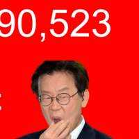

@ㅇㅇ 저 틀딱 트럭커들이 다같이 자금출자해서 같이 회사소유하는게 왜 사회주의임?
노동자 조합원은 뭔 느금 씹구녕 쳐빠는 소리임?
저 개인사업자 트럭커가 뭔 노동자고 조합원이란 말임?
↳ 답글 · ㅇㅇ · 11.09 15:31:49
@유다벤허 공동소유에서 사회주의라는 거임
자본주의라면 자신의 필요만큼만 출자해서 지분 소유를 해야 성립함
공동소유 << 이게 얼마나 허황된 소린가하면
만약 다같이 100만원내고 정유소를 소유해서, 모두가 기름값 10퍼씩 할인받는다고 가정할때
한달에 10km 운행하는 사람과
한달에 5km 운행하는 사람은, 출자대비 할인받는 금액이 기하급수적으로 달라짐
그럼 또 공동소유 내부에서 분열과 부패가 일어나게 되고
그게 공산주의가 망한 이유
↳ 답글 · 유다벤허 · 11.09 15:34:05
@ㅇㅇ(211.217) 글쳐봐라
지들이 돈내서 지들이 소유한다는걸 사회주의 이지랄하잖아
공동소유고 지분소유고는 저 인터뷰어랑 니 뇌내망상이고
저 병신 인터뷰어는 개인이 자금출자해서 같이 회사사거나 보유하는거 자체가 사회주의라잖아
공동소유 웅앵 지랄하는것도 인터뷰어가 그쪽으로 몰아가는구만
저 백인틀딱은 그냥 자금출자 회사소유
이말한거고
↳ 답글 · ㅇㅇ · 11.09 15:45:22
@유다벤허 글은 니가 봐야지
저 마가 틀딱은 필요에 근거한 사업성 지분출자가 아닌
공동출자 공동소유를 말하고 있음
완전한 사회주의 메커니즘
↳ 답글 · 유다벤허 · 11.09 15:51:41
@ㅇㅇ(211.217) 장애인새끼임?
저 글보고 자본주의적 공동소유인지
사회주의적 공동소유인지 어떻게 암?
저 틀딱은 개인이 자금출자해서 회사를 소유한다고 했는데?
자본주의 수직적 통합으로 볼수도 있는데?
니가 말하는건 저 인터뷰어가 몰아가면서 씨부리는거잖아
돌대가리새끼야
↳ 답글 · ㅇㅇ · 11.09 15:52:51
사회주의 맞지 저런 조합 쪽이나 노동 관련 조합 정도 크기 한해서는 사회주의가 우세인데 이걸 온갖데에다가 정책 국가기반으로 옮겨가다가 적용시켜버리면 초반에 노동력 기반에서는 부스팅 받아도 어느 임계점 넣으면 좆박는게 사회주의임 깔건 까고 인정할 건 인정해야지
↳ 답글 · 유다벤허 · 11.09 15:53:45
@ㅇㅇ(211.217) 여러명이 돈모아서 회사를 설립하고 소유하고 운영하는게 왜 사회주의임?
↳ 답글 · 유다벤허 · 11.09 15:55:37
@ㅇㅇ(58.29) 개인이 자금출자해서 회사를 설립하고 소유하고 운영하는게 어떻게 사회주의임?
저 백인틀딱은 협동조합, 노동조합인지 말도 안했구만
↳ 답글 · 유다벤허 · 11.09 15:57:49
@ㅇㅇ(211.217) 글 첫머리에 "유가 내려야 한다노, 정부가 유가통제하든가 보조금 때려야 한다노" 이지랄이라도 할줄 알았구만
개인이 자금출자해서 회사소유한다는말만 보고 사회주의인지 자본주의인지 어떻게암?
↳ 답글 · ㅇㅇ · 11.09 15:58:55
@ㅇㅇ(58.29) 한명한테는 '여러명'이 돈모아서, 다른 한명한테는 '개인'이 자금출자해서 회사 설립 소유 운영...좌좀새끼들마냥 단어 하나에 발작일으키면서 그러고 살지말자 병신들이나 그러면서 살지 ㅆㅂ ㅋㅋㅋㅋㅋㅋ
↳ 답글 · ㅇㅇ · 11.09 16:06:51
@유다벤허 저 마가틀딱의 논조를 조합하면 답이 나오잖슴
저 틀딱은 첫마디가 "기름값을 좀 내려야 해요"와 같은 반자본주의 발언임
자본주의에서 기름값은 시장이 결정함
이후 "다같이 돈을 내서 다같이 소유한다" 부분이 결정적 사회주의 시그널이고
물론 저 틀딱이 명시적으로 동일출자 동일분배를 말하진 않음
반대로 자본주의적 지분투자도 말하지 않았고
다만 전체적 맥락을 종합적으로 판독할때,
저 마가틀딱은 사회주의 논리를 말하고 있음
↳ 답글 · ㅇㅇ · 11.09 16:14:28
@ㅇㅇ(211.217) 기름값을 내려야 한다는 주장은 반자본주의라고 할 수 없음, 수정된 자본주의 나온게 벌써 100년임...
↳ 답글 · 유다벤허 · 11.09 16:41:06
@ㅇㅇ(58.29) 그럼 개인 여러명이 아니란거임?
단어하나에 꽂혀서 사회주의타령하는건 저 병신들임
↳ 답글 · 유다벤허 · 11.09 16:44:49
@ㅇㅇ(211.217) 보조금 줘서 기름값 내리는거 자체를 사회주의로 볼수없음
그리고 저거만 보고 사회주의인지 자본주의인지 저것만 보고는 모름
오히려 저 인터뷰어가 공동소유타령하면서 존나 몰아가는 중이지
좌좀 장애 병신매스컴인데 빡대가리 마가틀딱이 걸려든거고
↳ 답글 · 유다벤허 · 11.09 16:47:55
@ㅇㅇ(211.217) 저렇게 몰아가는 병신 인터뷰질 참교육을 트럼프, 찢재명이 잘하는거임
하지도 않은말 교묘하게 몰아가는 저 인터뷰 자체가 존나 수준낮은 저질 매스컴임
"여러명이 자본출자해서 회사소유한다"
이걸 사회주의식 공동소유다 이지랄 하는건 그냥 장애인새끼들
ㅇㅇ · 11.09 14:03:01
자본주의에 사회주의 함유된 사회자본주의 세살짜리 애새끼들도 다 알고 있는 판에 저 백돼지새끼는 존나 뻔한걸로 사람들 엿쳐먹이고 다니네
협동조합 만들잔 말에 바로 사회주의 나올 거면 파시즘도 나와야지 하여튼 빨갱이 새끼들은 ㅋㅋ
ㅇㅇ · 11.09 14:21:15
사회주의가 뭔지 모르나? 퍼 와도 병신 같은 걸 퍼오내..
ㅇㅇ · 11.09 14:29:51
우좀들은 자본주의가 뭔지, 어떤식으로 현실에서 구현되는지 생각이 하나도 없다는게 댓글에서 드러나네 ㅋㅋ 주주랑 조합원 차이도 전혀 모르고 ㅋㅋㅋㅋ 내가 이래서 우좀이랑 섞이기 싫은거. 평균적인 지능 수준이 너무 낮고 학습 의지도 없는데 자기가 다 안다는 확신은 가장 강함 ㅋㅋㅋㅋ ㅋㅋㅋ
↳ 답글 · ㅁㄴㅇㄹ · 11.09 14:40:54
주주와 조합원 차이가 여기서 왜필요한데 애초에 사회주의자들은 협동조합의 배타성때메 혁명으로 청산해야할 대상이라고 규정했는데 사익추구극대화라는 자본주의 정수에서 시작한걸 행위태양의 동일성에만 빠져서 사회주의의 목적이라는 대전제를 지워버리고 사회주의라고 우기면 세상천지에 무슨 사회주의 아닌게 없지 뭐 하나에 대한 사고가 앞뒤로 연결이 되는게 아니라 앞에 전제되고 사라지면 안되는 중요한건 치매수준으로 까먹어버리고 지가 주장하고싶은거 하나에 빠지면 거기서 빠져나오질못하는 아주 좁은 시야를 가졌노 ㅉㅉ
↳ 답글 · ㅇㅇ · 11.09 14:46:14
@ㅁㄴㅇㄹ(221.139) 협동조합이 혁명으로 청산해야할 대상이라 주장이 존재하는건 사회주의 안에서도 방법론의 측면에서 분파가 다양하기 때문인거지 이 멍청한새끼야. 그리고 자본가가 아닌 노동자에 의한 생산수단 소유라는 사회주의 목적에 충실한데 뭔 치매걸린새끼마냥 헛소리만 쳐늘어놓고있어 머갈통 터진 우좀새끼가 ㅋㅋㅋ
↳ 답글 · ㅇㅇ · 11.09 14:46:20
@ㅁㄴㅇㄹ(221.139) 이재명 일 잘하네~ 이러는 거랑 비슷한 거지 뭐. 자기들이 저지능인 거 티내는 일침 하고 캬~ 하는 게 저지능들 특이라서 이런 거에 일일이 화내봤자 무의미함
↳ 답글 · ㅇㅇ · 11.09 14:47:40
@ㅁㄴㅇㄹ(221.139) 주주와 조합원의 차이가 왜 필요하긴 이 앰창머갈통 달린 우좀 씹창새끼야. 주주는 돈 낸 만큼 생산수단에 대한 권리를 갖고 조합원은 조합원이기만 하면 생산수단 운영에 대한 의결권이 생기니까 중요하지. 이 앰창새끼는 이런것도 모르고 뭔 장황하게 헛소리하냐?
ㅇㅇ · 11.09 14:35:37
쥐뿔도 없는 것들이 무한경쟁사회가 옳다고 떠드는 게 웃기다니까
ㅇㅇ · 11.09 14:41:11
아무런 조건도 없이 무지성으로 공동 소유해야 한다 -> 공산주의 논리랑 다를 바 없죠 ㅇㅇ
ㅇㅇ · 11.09 14:43:37
필요한 조정이 있는 거지. 담합같은 거 제재하는 것도 같은 맥락이고. 독점도 그래서 막는 거고
ㅇㅇ · 11.09 14:44:12
돈내고 회사 나눠서 소유하는게 사회주의면 주식회사는 죄다 빨갱이 회사들이겠노
ㅇㅇ · 11.09 14:44:45
자본주의 사회에서 만들어진 자본주의적 매체에서 사회주의를 일침하는 자본주의를 일침하는 사회주의자가 사회주의자의 부끄러운 모습을 보여줌으로써 자본주의자가 자본주의에 더 확신을 가지게 되는
ㅇㅇ · 11.09 14:45:06
1. "우리가 석유회사를 소유하면 기름을 싸게 살 수 있다." → 자본주의적 공동투자 또는 협동조합주의
2. "석유회사는 자본가가 아니라 석유를 사용하는 사람들과 노동자들이 소유해야 한다." → 사회주의적 소유 원칙
↳ 답글 · ㅇㅇ · 11.09 14:47:07
이 경우엔 1번인데 트럭기사들은 노동자이자 자본가가 되고 시장에서 경쟁자가 될 수 있기때문에 협동조합 자체만으로는 사회주의라고 할 수 없음. 협동조합 자체는 자본주의의 맹점을 보완하기 위해 나온것이기 때문
↳ 답글 · ㅇㅇ · 11.09 14:52:45
협동조합주의는 사회주의자들이 자본주의를 윤리적으로 비판하면서 시작된건데 협동주의 자체는 자본주의에 흡수되어버림. 즉 현대 시장경제에서 협동조합은 자본주의의 일부로 기능하기 때문에 자본주의냐 사회주의냐는 철학적 도덕적 논쟁에 불과한 무의미한 논쟁이란거임
↳ 답글 · ㅇㅇ · 11.09 14:54:48
@ㅇㅇ(218.148) 협동조합이 자본주의 시스템 안에서 존재할 뿐 협동조합은 자본주의가 전혀 아님. 자본주의가 뭐라고 생각하길래 그게 자본주의일 수 있음? 자본주의일려면 생산수단에 대해서 돈 낸 만큼 권리를 얻어야 자본주의임
@ㅇㅇ(218.148) 차등의결권 주식, 무의결권 주식 모두 시장에서 다른 값에.거래되는거 모름?
↳ 답글 · ㅇㅇ · 11.09 15:06:16
@ㅇㅇ 시장가격은 다르지만 투자금에 비해 의결권을 배분해야한다는 뜻은 아님. 오히려 자본주의사회에서는 소유자들이 서로 계약을 통해 다양한 의결권 구조를 설계할수있기때문. 자본주의의 핵심은 생산수단의 사적 소유임
↳ 답글 · ㅇㅇ · 11.09 15:06:53
@ㅇㅇ 오히려 너 말대로 돈 낸 만큼 권리를 얻어야 자본주의라면 1인 1의결권을 갖고있는 협동조합도 자본주의임
↳ 답글 · ㅇㅇ · 11.09 15:09:27
@ㅇㅇ(218.148) 기업에 대한 권리는 자익권과 의결권으로 표상되는 공익권 이 두가지가 있는것이고, 그 둘을 어떻게 섞어서 부여하든 기업에 대한 권리는 돈 낸 만큼 가져가는게 자본주의 구현의 핵심인거임. 그래서 경제학에서는 주식투자든 기업채권 투자든 구분 안하고 자본이라고 부르는거고
↳ 답글 · ㅇㅇ · 11.09 15:09:55
@ㅇㅇ(218.148) 1인 1의결권이라 자본주의가 아닌거임. 두수주의는 문자 그대로 자본주의랑 다른걸
↳ 답글 · ㅇㅇ · 11.09 15:12:02
@ㅇㅇ(218.148) 단지 의결권이 아니라 기업에 대한 권리를 돈낸만큼 가져가는게 핵심임
↳ 답글 · ㅇㅇ · 11.09 15:13:26
@ㅇㅇ 1. 자본주의에서 기업에 대한 권리는 반드시 출자금에 비례하지 않음 이건 우리나라 대기업들의 순환출자구조만 생각해도 알 수 있지?
2. 주식과 기업채권을 모두 자본이라고 부른다고 해서 주주와 채권자가 기업에 대해 동일한 성격의 권리를 갖는 것은 아님
협동조합법에 따르면 출자좌수에 관계없이 각 1개의 권리를 갖는데 투자액에 비례한 권리 배분이 자본주의의 필수조건이라면 오히려 자본주의 경제에서 존재할수 없는 기업의 형태임
↳ 답글 · ㅇㅇ · 11.09 15:14:37
@ㅇㅇ 또 다른 문제는 권리의 총량의 뭔가임.
의결권 1표는 배당청구권 얼마와 같은 가치인지, 경영에 참여할 권리와 배분받을 권리를를 어떻게 정량으로 환산함?
↳ 답글 · ㅇㅇ · 11.09 15:16:21
@ㅇㅇ(218.148) 1. 순환출자 구조와 재벌은 자본주의에 부합하는 형태가 아님.
2. 자본주의라는 개념의 의미를 제대로 알라는 의미에서 한 말임. 돈 낸 만큼 기업에 대한 권리(돈받을 권리든 의결권이든) 갖는게 자본주의라는거. 협동조합은 자본주의적 사상을 기반으로 한 기업 형태가 아님 ㅇㅇ. 미국이든 한국이든 순도 100% 자본주의라 생각하는게 틀렸음
↳ 답글 · ㅇㅇ · 11.09 15:17:11
@ㅇㅇ(218.148) 그건 시장에서 결정되는거임 ㅇㅇ... 시장에서 거래가 안되는건 어쩔수없이 회계법인 붙어서 벨류에이션 하는거고
@ㅇㅇ 현실의 자본주의가 순도 100% 자본주의가 아니라는 점에는 동의합니다. 하지만 그건 투자금에 비례한 권리 배분이 자본주의의 필수조건이라는 주장을 입증하지 못합니다.
IMF 등에서 설명하는 자본주의의 주요 특징은 생산수단의 사적 소유와 통제, 시장을 통한 자원 배분, 이윤 추구이지 투자금과 기업 지배권의 엄격한 비례성이 아닙니다.
순환출자나 재벌 구조가 이상적인 자유경쟁이나 바람직한 기업 지배구조에 부합하지 않을 수는 있습니다. 하지만 그렇다고 자본주의 경제 내부에서 발생한 사적 소유와 자본 축적의 형태가 자본주의와 무관해지는 것은 아닙니다.
협동조합 역시 사회주의적 사상과 역사적 관계가 있다는 점은 인정합니다. 그러나 기업 형태의 사상적 기원과 실제 생산관계는 구분해야 합니다.
↳ 답글 · ㅇㅇ · 11.09 15:20:04
@ㅇㅇ 결국 묻고 싶은 것은 하나입니다. 투자금에 비례해 기업에 대한 권리를 배분해야만 자본주의라는 정의는 어떤 경제학적 근거에 따른 것인가요? 그것이 단순히 본인이 생각하는 이상적인 자본주의 모델이라면, 일반적인 자본주의의 정의와 구분해야 하지 않을까요?
↳ 답글 · ㅇㅇ · 11.09 15:24:51
@ㅇㅇ(218.148) 투자금에 비례해 기업에 대한 권리를 부여받아야 자본주의라는 정의는 자본이란 개념과 시장이란 개념이 공존하는 한 불가피한것이기 때문임. 결국 자본주의냐 사회주의냐 분류는 생산수단에 대한 권리를 어떤식으로 부여할 것이냐 이고.
↳ 답글 · ㅇㅇ · 11.09 15:25:33
@ㅇㅇ(218.148) 그리고 자본주의 시스템 안에서 일어난 모든 사건들이 자본주의라는 이념에 부합하는게 아님.
집단 전체주의적 경제운용이 사회주의임. 애초에 모든 국가는 국민이 낸 세금과 합의된 의견으로 유지되는거고 그걸 바탕으로 사회주의가 전제가 돼야 물가조절 복지 군대 치안 등 국가를 유지하는거. 사회주의가 경제보다 정치체제 드립에 가까운 이유도 이런 이유 때문임. 애초에 센징의 헌법도 유럽식 법안에 사회주의적 발상을 도입해서 평시에도 국가 개입이 적극적인거.
↳ 답글 · ㅇㅇ · 11.09 15:49:15
재밌는건 센징거리는 너의 조국 일본이 유럽식 경제체제 카피품이라 사회주의적 시스템이 한국보다 더 강함
한국은 그나마 미국식 경제시스템을 받았고 IMF 조정을 거치면서 그나마 나아진것
한국 경제소득이 괜히 일본을 역전한게 아님
자본주의 = 경제체제
사회주의 = 경제, 정치체제
트럭 기사가 주장하는것 : 조합이 정유소를 공동 구매해서 외압에 흔들리지 않는 정유소를 가져서 기름값을 아끼자.
현실적으로 불가능하고 사회주의적인 발상일지라도 결국 이윤추구가 목적이고, 정치가 안들어갔으니 자본주의가 맞음.
이리저리 꼴 필요없고 분탕치는놈들 거의 공산주의자, 빨갱이들임 헷갈리지마셈
ㅇㅇ · 11.09 17:56:20
최초의 근대적 협동조합인 로치데일 협동조합을 탄생시킨 사람이 로버트 오언인데
최저 노동시간, 아동노동금지를 법으로 제정하자고 주창한 이상적 사회주의자임
2찍들이 그렇게 발작하는 전국단위의 노동조합을 영국 최초로 창설하고
현대 노동법 노동운동 노조의 토대, 그리고 현대까지도 이어지는 협동조합의 로치데일 7원칙을 만든 사람이고 우긴다고 조합의 성격이 바뀌지않음ㅋㅋㅋ
실베 2찍들의 확증편향과 내로남불 익히 알고있지만 텅빈 머가리로 역사적 사실조차 왜곡하고
실베 포텐에서 주워들은 뇌피셜로 꾸득꾸득 쳐우기는거보면 얼마나 저지능인지 벽 느껴질정도임 ㅋㅋ
ㅇㅇ · 11.09 18:40:46
걍 저 할아버지기 말하는걸 실제로 실행하는건 국가의 개입이 전혀 필요가 없는데 뭔 사회주의 ㅇㅈㄹㅋㅋㅋㅋㅋㅋㅋㅋㅋ
저능아새끼들 ㄹㅇ 골때리네
ㅇㅇ · 11.09 11:04:27
저 2찍마가할배는 달걀값이 비싸니까 우리가 닭농장 만들겠다인데
애초에 트두창 이런전쟁, 관세로 달걀생산 비용 자체가 오른거라 2찍마가능지가 처참하단거임
마가할배가 닭농장만들어도 사료값 목재값 인건비 싹다 올랐는데ㅋㅋㅋㅋ 답없지
2찍 마가들 지금 석유가격만 뛴게 아니라 비료값 사료값 기타 자재값 싹다 답없는데 ㅋㅋㅋ
비료 협동조합도 만들고 사료 협동조합도 만들고 ㅋㅋㅋ
한두개가 아니라 싹다 협동조합 만들면 그게 사회주의지 머
ㅇㅇ · 11.09 11:08:48
2찍 마가들 지금 석유가격만 뛴게 아니라 비료값 사료값 기타 자재값 싹다 답없는데 ㅋㅋㅋ
석유 협동조합만 아니라 비료 협동조합도 만들고 사료 협동조합도 만들어야지 ㅋㅋㅋ
한두개가 아니라 싹다 협동조합 만들면 그게 사회주의지 머
ㅇㅇ · 11.09 11:10:25
저 2찍마가할배는 달걀값이 비싸니까 우리가 닭농장 만들겠다인데
애초에 트두창 이란전쟁, 관세로 달걀생산 비용 자체가 오른거라 2찍마가능지가 처참하단거임
마가할배가 닭농장만들어도 사료값 목재값 인건비 싹다 올랐는데ㅋㅋㅋㅋ 답없지
ㅇㅇ · 11.09 11:11:37
저런건 사소한 개념 차이인거지 좌빨년들보고 지 학점으로 학점낮은 친구 나눠주라니까 죄다 발작하더만 ㅋㅋ - dc App
ㅇㅇ · 11.09 11:11:50
정유소가 존나 많아지면 발생하는 사회적 비용까지는 뇌가 생각하지못하는군 램이 딸리나봐
ㅇㅇ · 11.09 11:13:34
사회주의와 자본주의라는 체제 자체에 집착하고 편을 가르는건 멍청한 짓임
냉전때 부터 그런식으로 편가르기를 해서 이게 무엇이 문제 인지 인식을 못하는데
이걸 편가르기 할 필요 없고 필요에 따라 섞어서 쓰면 된다
어떻게 얼마나 하느냐가 중요함
↳ 답글 · ㅇㅇ · 11.09 11:22:51
체제의 순수성에 집착하는건 빨갱이들이나 하는 멍청한 짓임
체제는 사람들을 위해서 존재하는거지 체제를 위해서 사람이 희생하는게 아님
↳ 답글 · ㅇㅇ · 11.09 11:25:00
저 할배의 말이 옳으니 그르니 하는 말이 아님
민주주의 사회에선 저런 의견 얼마든지 낼수도 있고 필요하면 수용하는것도 가능하다는 말이다
↳ 답글 · 설명충이된다 · 11.09 12:05:57
대한민국에서 가장 사회주의적인 정책이 국민건강보험이고, 박정희가 만들어 전두환이 보편화 시켰음. 사회주의 ㅅ만 들어가도 발작하는 새끼들이 박정희 빨면 병신이다.
↳ 답글 · 배너로드 · 11.09 12:47:05
@설명충이된다 국민 건강보험을 ' 가장 사회주의적인 정책 ' 이라고 말하는건 니 주관적 정치적 의도가 존나 투명하게 보임. 국민 건강 보험은 우리나라에 있는 셀수도 없이 많은 복지정책중 하나인데 그게 ' 가장 사회주의적 ' 이라고 불리울 이유도 없음. 다만 ' 가장 효과를 본 ' 복지정책이라고 불리울만한거지
@유다벤허 자기 자신에게 좆나게 확신이 있는 병신새끼구나. 전제부터 틀려먹었으니까 얌전히 가서 난독증 검사 받아라.
ㅇㅇ · 11.09 11:13:43
세상은 공산주의가 이상적인 세계라고 했지만 정작 큰 손들이 이상적인 세계를 만들고 싶지 않은게 문제임
할 수만 있다면 얼마든지 할 수 있었을 거임 근데 위에서 내려다 보려는 큰 손들의 욕심들이 지금의 세계를 만든 것
ㅇㅇ · 11.09 11:16:09
협동조합주의는 결국 자본주의로 귀결됨 예시-농협
00 · 11.09 11:21:03
그게 왜 사회주의 사회주의는 정부에서 쌀배급 하는게 사회주의 지
ㅇㅇ · 11.09 11:21:14
아으 트황상을 잃은게
↳ 답글 · ㅇㅇ · 11.09 11:21:21
아으!
↳ 답글 · ㅇㅇ · 11.09 11:21:30
아으으으으
ㅇㅇ · 11.09 11:22:58
ㅇㅇ · 11.09 11:25:11
누구보다 자본주의를 좋아하는 그분들
ㅇㅇ · 11.09 11:27:44
배급견 욕하는 극우딸피들 기초연금 쪽쪽빨아먹으며 올려달라는거랑 비슷한듯
ㅇㅇ · 11.09 11:32:44
시발 협동조합이 사회주의에서 나왔지 그럼 자본주의에서 나옴? 소련이 무슨무슨 조합 존나 좋아한건 모르나ㅋㅋ 애초에 조합주의라는 소리도 있을정도인제
↳ 답글 · ㅇㅇ · 11.09 11:40:19
근데 그건 마치 옛날 페미랑 지금 페미랑 같다고 하는 느낌 아님?
↳ 답글 · 설명충이된다 · 11.09 12:08:29
@ㅇㅇ(223.39) 요즘페미랑 옛날 페미가 다르긴 한데 근데 니가 아는 소련 시절은 어차피 스탈린 이후 아님? 그러면 요즘 페미랑 요즘 페미가 다르다고 하는거랑 마찬가지야.
ㅇㅇ · 11.09 11:43:26
사회주의는 정부가 다 갖고 있으면서 배급하는게 사회주의인데 뭔 선동질임 좌빨 씨발 영포티 개좆쓰레기 역사의 배반자 새끼들아
ㅇㅇ · 11.09 11:44:45
자본주의 국가들도 사회주의 영향 받은 정책들이 얼마나 많은데 "협동조합은 사회주의 아님" 이러고있노 진짜 빡통들 ㅋㅋ
↳ 답글 · ㅇㅇ · 11.09 11:49:32
저 발상에서 사이드로 조금만 틀면 그게 느그들이 그렇게 혐오해 마지않는 노조인데 마가 모자 쓴 백인이 말했다는 이유로 쉴드치는건 진짜 역해서 못봐주겠네 ㅋㅋㅋㅋㅋㅋㅋ
↳ 답글 · ㅇㅇ · 11.09 11:53:25
뭐어째겠음 다 저능아들이라 그런거지... 당장 현대 사회에서 말하는 99.99%의 복지정책이 그냥 사회주의의 연장선이고 걍 부분적으로 수용하는거임 민주주의고 자본주의고 할거없이 ㅇㅇ 안그러면 사회계층간에 돌이킬수없는 수준의 문제가 누적돼고 최종적으론 사회가 붕괴할테니까 윤활유 역할로 투입하는건데 지들이 받아처먹은 복지는 그냥 당연한거라고 생각할듯 다 여태껏 사람들 갈아마셔가면서 생겨나간 제도인건데
ㅇㅇ · 11.09 11:49:05
트럼프랑 센더스랑 공약 비슷했던건 이미 다들 아는 사실 아닌가???? ㅋㅋㅋㅋ - dc App
해갤러 · 11.09 11:55:53
개인에게 소유권이 없어야 사회주의지 지들이 갖겠다는데 씨빌 뭐가 사회주의
↳ 답글 · 설명충이된다 · 11.09 12:09:33
그건 공산주의야
ㅇㅇ · 11.09 12:04:24
개좆저능아 좌파새끼들 존나 억지부리면서 자폐적 지식으로 열심히 실드치고 있노 개쳐웃기네 ㅋㅋㅋㅋㅋㅋㅋㅋㅋㅋㅋㅋㅋㅋ
그러면 오픈ai나 엔디비아가 하이닉스 hbm 너무 비싸다고 자체칩 개발하는것도 사회주의겠노 ㅋㅋㅋㅋㅋㅋㅋㅋㅋㅋㅋㅋㅋㅋㅋㅋㅋㅋㅋㅋㅋㅋㅋ 나여 사회주의 ㅋㅋㅋㅋㅋㅋ
↳ 답글 · ㅇㅇ · 11.09 12:08:00
또 저능아 비유하네 법인이 회사라는 생산제를 소유하는 비유면 자본주의인데 저 틀딱은 트럭운전자 전체가 생산제를 소유해야한다 하니 사회주의라는거지 - dc App
↳ 답글 · ㅇㅇ · 11.09 12:21:37
너가 저능아로 태어난건 죄가 아닌데 저능아인걸 동네방네 광고하고 다닐 필요는 없어...
↳ 답글 · ㅇㅇ · 11.09 13:00:07
@ㅇㅇ(211.178) 2찍 저능아한테 뭐하러 공들여 가르쳐주냐
어차피 멸공이나 외치고 유대인 총알받이나 할 운명인데 ㅋ
↳ 답글 · ㅇㅇ · 11.09 18:42:04
@ㅇㅇ(118.235) 트럭운전자 "전체"라는 말이 대체 어디에 나옴? ㅋㅋㅋㅋㅋㅋㅋㅋㅋㅋㅋㅋㅋㅋㅋㅋㅋㅋㅋㅋㅋㅋㅋㅋㅋ
↳ 답글 · ㅇㅇ · 11.09 18:43:01
@ㅇㅇ(118.235) 국어 9등급 개좆저능아새끼들은 본문에 없는내용도 머릿속에서 막 자동으로 상상되어져서 자동으로 왜곡되어지나봄?
↳ 답글 · ㅇㅇ · 11.09 18:44:19
@ㅇㅇ(118.235) 느그 쳐망한 홈플러스 홈플러스 노조가 알아서 인수하라는게 어떻게 사회주의임? 이 과정에서 국가의 개입이 없는데?
사회주의 지지자들도 사회주의가 뭔지를 잘 모르노 ㅋㅋㅋㅋㅋㅋㅋㅋㅋㅋㅋㅋㅋㅋㅋㅋㅋㅋㅋㅋㅋㅋㅋㅋㅋㅋㅋㅋㅋㅋㅋ
ㅇㅇ · 11.09 12:54:35
사회주의가 그렇게 옳다면서 트럼프의 관세는 왜 반대함? ㅋㅋㅋㅋㅋㅋ
↳ 답글 · ㅇㅇ · 11.09 12:55:30
박정희의 계획경제가 사회주의 정책인데 왜 박정희는 독재자라고 비난받음? ㅋㅋㅋㅋㅋ
↳ 답글 · ㅇㅇ · 11.09 12:57:32
북한 김정은 = 중세식 전제군주정
박정희, 전두환 = 사회주의
김대중 = 신자유주의자, 노무현 = 신자유주의자
이게 팩트임
↳ 답글 · ㅇㅇ · 11.09 13:01:35
@ㅇㅇ(14.33) 자본 사회 공산 = 경제 형태
민주 독재 = 정치 형태
2찍 저능아 새끼야
↳ 답글 · ㅇㅇ · 11.09 13:04:31
@ㅇㅇ 경제형태 이 지랄을 하고있네 ㅋㅋㅋ
진짜 1찍은 지능이 앰창인가 시발 ㅋㅋㅋ
현대에서 정치와 경제를 분리하고있네 ㅋㅋ 시발 ㅋㅋ
↳ 답글 · ㅇㅇ · 11.09 13:06:06
@ㅇㅇ 사회주의자체가 시발 ㅋㅋ 개인자산의 자유를 인정안하고 노동조합 국가가 그걸 뺏어서 관리한다는 독재사상 그 자체 인데 독재 = 정치행태 ㅇㅈㄹ 하고있네 시발 ㅋㅋㅋ ㅋㅋㅋㅋㅋ
↳ 답글 · ㅇㅇ · 11.09 13:06:42
@ㅇㅇ 어디서 주워들어가지고
자본 사회 공산 = 경제 형태
민주 독재 = 정치 형태
이 지랄 ㅋㅋㅋㅋㅋㅋㅋㅋㅋㅋㅋㅋㅋㅋㅋㅋㅋㅋㅋㅋㅋㅋㅋㅋㅋㅋㅋㅋㅋㅋㅋㅋㅋㅋㅋㅋㅋㅋㅋㅋㅋㅋㅋㅋㅋㅋㅋㅋㅋㅋㅋㅋㅋㅋㅋㅋㅋㅋㅋㅋㅋㅋㅋㅋㅋㅋㅋㅋㅋㅋㅋㅋㅋㅋㅋㅋㅋㅋㅋㅋㅋㅋㅋㅋㅋㅋㅋㅋㅋㅋㅋㅋㅋㅋㅋㅋㅋㅋㅋㅋㅋㅋㅋㅋㅋㅋㅋㅋㅋㅋㅋㅋㅋㅋㅋㅋㅋㅋㅋㅋㅋㅋㅋㅋㅋㅋㅋㅋㅋㅋㅋㅋㅋㅋㅋㅋㅋㅋㅋㅋㅋㅋㅋㅋㅋㅋㅋㅋㅋㅋㅋㅋㅋㅋㅋㅋㅋㅋㅋㅋㅋㅋㅋㅋㅋㅋㅋㅋㅋㅋㅋㅋㅋㅋㅋㅋㅋㅋㅋㅋㅋㅋㅋㅋㅋㅋㅋㅋㅋㅋㅋㅋㅋㅋㅋㅋㅋㅋㅋㅋㅋㅋㅋㅋㅋㅋㅋㅋㅋㅋㅋㅋㅋㅋㅋㅋㅋㅋㅋㅋㅋㅋㅋㅋㅋㅋㅋㅋㅋㅋㅋㅋㅋㅋㅋㅋㅋㅋㅋㅋㅋㅋㅋㅋㅋㅋㅋㅋㅋㅋㅋㅋㅋㅋㅋㅋㅋㅋㅋㅋㅋㅋㅋㅋㅋㅋㅋㅋㅋㅋㅋㅋㅋㅋㅋㅋㅋㅋㅋㅋㅋㅋㅋㅋㅋㅋㅋㅋㅋㅋㅋㅋㅋㅋㅋㅋㅋㅋㅋㅋㅋㅋㅋㅋㅋㅋㅋㅋㅋㅋㅋㅋㅋㅋㅋㅋㅋㅋㅋㅋㅋㅋㅋㅋㅋㅋㅋㅋㅋㅋㅋㅋㅋㅋㅋㅋㅋㅋㅋㅋㅋㅋㅋㅋㅋㅋㅋㅋㅋㅋ
↳ 답글 · ㅇㅇ · 11.09 13:07:51
@ㅇㅇ 마르크스 조차도 공산주의를 하기위해선 독재를 해야한다고 지랄을 했는데
자본 사회 공산 = 경제 형태
민주 독재 = 정치 형태
이 지랄 ㅋㅋㅋㅋㅋㅋㅋㅋㅋㅋㅋㅋㅋㅋㅋㅋㅋㅋㅋㅋㅋㅋㅋㅋㅋㅋㅋㅋㅋㅋㅋㅋㅋㅋㅋㅋㅋㅋㅋㅋㅋㅋㅋㅋㅋㅋㅋㅋㅋ
↳ 답글 · ㅇㅇ · 11.09 13:08:59
@ㅇㅇ 공산사회주의가 뭔지도 모르고 그냥 돈주는갑하고 물고빨고지랄을 하니 시발 ㅋㅋㅋㅋㅋㅋㅋ
배급견이라고 욕을 쳐먹지 ㅋㅋㅋㅋㅋㅋㅋ
↳ 답글 · ㅇㅇ · 11.09 13:13:14
@ㅇㅇ(14.33) 2찍 저능아 특
= 알려주면 패드립 한다
= 자신의 저능했던 모습에 수치심을 느낀 나머지 상대방을 공격함
ㅇㅇ · 11.09 12:55:04
좌파들 단어에 꽃혀서 우기는 수준 ㅋㅋㅋ
ㅇㅇ · 11.09 13:06:54
2찍 극우 오열 ㅋㅋ
ㅇㅇ · 11.09 10:16:12
맞음 저런 지가 뭔말을 하는지도 모르는 할배들이 하자고 하는대로 하면 사회주의임
↳ 답글 · ㅇㅇ · 11.09 10:16:27
근데 저틀딱도 그 사회주의가 쳐망했다는 사실만은 알고있네 ㅋㅋㅋㅋㅋㅋㅋㅋㅋㅋㅋㅋㅋㅋㅋㅋ
↳ 답글 · ㅇㅇ · 11.09 10:38:42
@ㅇㅇ(121.136) 입장바꿔 사고가 되는거지. 트럭기사도 자기이익을 부풀려 말하는것뿐. 근데 누구나 주인이 되고싶어 해. 그런 본능이 있는거야 ㅋㅋㅋㅋ
ㅇㅇ · 11.09 10:16:15
국가에서 시장에 개입하는게 사회주의 경제의 핵심 ㅋㅋㅋㅋㅋㅋㅋㅋㅋㅋㅋㅋㅋㅋㅋㅋㅋㅋ 누구보다 사회주의 원하는 세끼들이 누구보다 사회주의를 욕함 ㅋㅋㅋㅋㅋㅋㅋㅋㅋㅋ
↳ 답글 · ㅇㅇ · 11.09 10:40:48
국가의 개가 되어라. 일을 해야해 너희는
↳ 답글 · ㅇㅇㅇ · 11.09 11:26:57
ㄹㅇ 이대남들은 즈그덜 취업못하는거 국가탓하고 사회탓 하는거 보면 마인드는 진성 빨갱이임
ㅇㅇ · 11.09 10:16:36
걍 상장 안 한 주식회사 개념을 이야기하는데 사회주의 타령하고 있노
↳ 답글 · 병신보면짖는개 · 11.09 10:20:11
ㅇㄹ ㅋㅋㅋㅋㅋㅋ
웨렌버핏은 코카콜라 사서 코카콜라만 처먹는데 사회주의자노?ㅋㅋㅋㅋㅋㅋㅋㅋㅋㅋ
이 새끼들은 주주라는 개념을 이해를 못하네
↳ 답글 · ㅇㅇ · 11.09 10:22:23
@병신보면짖는개(58.233) 조합원과 주주의 차이를 우좀들의 보더콜리보다 멍청한 지능으로는 이해하기 힘들긴 할듯 ㅋㅋ
• 집단농장 (콜호스, Kolkhoz):
• 소련 협동조합 중 가장 대표적인 형태입니다.
중공도 마오쩌뚱때부터 농촌 협동조합으로 시작함 ㅋㅋ
↳ 답글 · ㅇㅇ · 11.09 11:50:21
그럼 협동조합하는애들 다잡아가야지 왜 저사람만빨갱이취급함
ㅇㅇ · 11.09 10:31:44
저 할아버지는 협동조합을 얘기하는데 너 사회주의 이지랄하네
ㅇㅇ · 11.09 10:39:52
이게 왜 사회주의냐고 하는 애들은 이미 자본주의를 신앙하고 있는 거임
분명 사회주의의 의념을 근간으로 만든게 협동조합인데 그걸 부정하는게 중세시대에 하나님 부정하면 저건 마녀라고 불태운 애들이랑 똑같은 사고수준인 거
이미 순수한 자본주의는 죽어 나자빠져서 좀비처럼 기워서 운영하고 있다는 사실을 전혀 받아들지 못하는 순수주의자들이지
↳ 답글 · ㅇㅇ · 11.09 10:40:22
어떤 사상이든 사상은 도구일 뿐이라는 걸 깨닫지 못하면 그 사상의 노예로 살아가게 됨
↳ 답글 · ㅇㅇ · 11.09 10:42:31
깨어난자 한 명더 발견. 모든 사상은 지배체계일뿐 ㅋㅋㅋ 결국 다 노예로 굴러가는거. 가진놈 못가진놈이 이 세상 전부지.
↳ 답글 · ㅇㅇ · 11.09 10:45:12
자본주의 = 자본을 가진놈이 주인 , 사회주의 = 민족주의자가 주인인거지. 그밖에 무슨 체제를 만들어도 지배자와 피지배자로 나뉨.
위에서 1찍이니, 좌파니 빨갱이니 거리는 놈들은 복종하는 본능을 타고나서 그런거임. 수천년동안 지배자들은 소수였음. 나머지는 그냥 다 소작농이고 시키는일만 하는놈들 ㅋㅋㅋㅋㅋㅋ
↳ 답글 · ㅇㅇ · 11.09 10:49:23
그리고 민주주의는 위에 두 가지의 경우보다 더 암울하고 더 처참한 사상임. 민주주의는 주인이 없는 중립적인 장소란뜻임. 이건 섬뜩한거임. 이 세상의 모든 문명은 주인과 귀족들의 가치판단으로 발전한거임. 민주주의는 주인이 없는 노예들의 나라라는거지. 결국 망하는거야
이상론의 정점이 사회주의인거같고, 어줍잖은 현실의 타협안이 공산주의, 그 극점에 있는게 전체주의, 이 모든 것들의 대타협이 민주주의 <- 이거 맞음?
↳ 답글 · ㅇㅇ · 11.09 10:44:43
그리고 민주주의는 직접민주주의로만 실현가능해서 타협한 현실이 대리민주주의고, 여기에 자본주의가 합쳐져서 자유시장경제 민주주의가 된거고, 자유시장경제 때문에 국가소유경제인 공산주의와 전체주의의 대척이 된거고?
↳ 답글 · ㅇㅇ · 11.09 10:45:49
흔히 대학가에서 자본주의와 민주주의를 분리할 수 없다고 가르치지만, 그건 낡은 소리고 현재 중국만 봐도 박살난 가설임
↳ 답글 · ㅇㅇ · 11.09 10:46:21
이상은 절대 실현될수 없다. 이상은 동화책이나 예술에 어울림. 진리는 존나게 추하다
↳ 답글 · ㅇㅇ · 11.09 10:52:01
@ㅇㅇ(175.124) 민주주의는 유럽의 경우와 같이, 조직력이 쇠퇴할때 등장하는 정치 체계임. 이미 민주주의를 실현하는 장소 자체가 쇠퇴하는 국가의 전형에 불과함.
↳ 답글 · ㅇㅇ · 11.09 10:53:37
민주주의 공산주의가 아니야
주인의 유무인거다. 명령내릴수있는 탁월한 존재. 그 주인의 시대가 저물고 이제 원숭이 시대인거다. ㅋㅋㅋ
↳ 답글 · above1288 · 11.09 17:12:15
이상이 뭔지가 정의가안되니까 이상론이 무의미한거임
ㅇㅇ · 11.09 10:45:41
사회주의는 누구나 꿈꿀수밖에 없음
이렇게 되면 좋잖아 라는식이라
무적논리임
↳ 답글 · ㅇㅇ · 11.09 10:52:36
주인을 찾아해매는 한 마리의 양 ~
크흠 · 11.09 10:45:46
저건 더 정확하게 얘기하면 협동조합 아님? 농협, 축협, 수협이 저런식으로 만들어진건데
↳ 답글 · ㅇㅇ · 11.09 10:47:52
협동조합주의가 사회주의인지 아닌지 검색해봐 ㅇㅇ
↳ 답글 · ㅇㅇ · 11.09 10:50:46
@ㅇㅇ • 집단농장 (콜호스, Kolkhoz):
• 소련 협동조합 중 가장 대표적인 형태입니다.
중공도 마오쩌뚱때부터 농촌 협동조합으로 시작함 ㅋㅋ
↳ 답글 · ㅇㅇ · 11.09 10:55:18
그래 산업혁명기에 로버트 오언 같은 공상적 사회주의자들이 열악한 노동자들의 환경을 개선해보려고 협동조합 운동이나 새로운 공동체 만들기 이런걸 했거든 그러니 시초부터 저런 개념들은 사회주의에 가까운거지. 소수 자본가가 아닌 구성원을 위한 생산, 경영, 이익분배. 현대에는 이미 완벽한 건 없으니 다 스까먹자주의로 필요한 부분에서는 이 요소 저 요소 도입해서 써먹고 있는데 왜 싸우는지 모르겠네
• 집단농장 (콜호스, Kolkhoz):
• 소련 협동조합 중 가장 대표적인 형태입니다.
중공도 마오쩌뚱때부터 농촌 협동조합으로 시작함 ㅋㅋ
↳ 답글 · ㅇㅇ · 11.09 11:52:16
꼴통
ㅇㅇ · 11.09 10:51:11
저건 질문하는새끼가 빡통이네 - dc App
↳ 답글 · 병신보면짖는개 · 11.09 10:53:52
좌빨답게 답 정해놓고 물어봄
ㅇㅇ · 11.09 10:53:46
걍 원조 마가에 소금뿌리니까 김치마가들 몸비트는거
↳ 답글 · ㅇㅇ · 11.09 10:58:10
걍 니들이 저능아인게 아닐까
↳ 답글 · ㅇㅇ · 11.09 11:09:32
@ㅇㅇ(211.119) 2찍 마가들 지금 석유가격만 뛴게 아니라 비료값 사료값 기타 자재값 싹다 답없는데 ㅋㅋㅋ
석유 협동조합만 아니라 비료 협동조합도 만들고 사료 협동조합도 만들어야지 ㅋㅋㅋ
한두개가 아니라 싹다 협동조합 만들면 그게 사회주의지 머
ㅇㅇ · 11.09 10:55:38
협동조합이 왜 사회주의냐 미친놈들아 ㅋㅋ
↳ 답글 · ㅇㅇ · 11.09 11:42:01
그냥 기레기가 남하는말 왜곡하고있는데 저기도 언론이 문제인거맞는듯
↳ 답글 · ㅇㅇ · 11.09 11:42:59
남은 먹고사는거라진지한데 말장난실실 쏴죽여도 무죄라고본다
ㅇㅇ · 11.09 11:01:02
개좆저능아 좌파새끼들 존나 개쳐웃긴게 저 대화내용이 이상한부분이 있단걸
저 리포터도 모르고 저 리포터를 촬영한 새끼도 모르고 쇼츠를 만든미국새끼도 모르고 쇼츠를 퍼온한국새끼도 모르고 쇼츠내용으로 글쓴새끼도 모르고
댓글에서 본문실드친단새끼들도 모른단거임
개좆저능아새끼들의 대환장 퍼레이드임 걍 ㅋㅋㅋㅋㅋㅋㅋㅋㅋㅋㅋㅋㅋㅋㅋㅋㅋㅋㅋㅋㅋㅋㅋㅋㅋㅋㅋㅋㅋㅋㅋㅋㅋㅋㅋㅋㅋㅋㅋㅋㅋㅋㅋㅋㅋㅋㅋㅋ
↳ 답글 · ㅇㅇ · 11.09 11:01:30
진짜 개충격적임 걍 ㅋㅋㅋㅋㅋㅋㅋㅋㅋㅋㅋㅋㅋㅋㅋ
↳ 답글 · ㅇㅇ · 11.09 11:03:13
영상 찍은놈은 알고 찍었을거야 개소리라도 밀어붙이면 병신들은 선동당하거든 그럼 남는 장사지 - dc App
↳ 답글 · ㅇㅇ · 11.09 11:04:01
@ㅇㅇ(118.235) 몰랐을 확률 523%봄 ㅋㅋㅋㅋㅋㅋㅋㅋㅋㅋㅋㅋㅋㅋㅋㅋㅋㅋㅋㅋㅋㅋㅋㅋㅋㅋ
↳ 답글 · ㅇㅇ · 11.09 11:09:14
2찍 마가들 지금 석유가격만 뛴게 아니라 비료값 사료값 기타 자재값 싹다 답없는데 ㅋㅋㅋ
석유 협동조합만 아니라 비료 협동조합도 만들고 사료 협동조합도 만들어야지 ㅋㅋㅋ
한두개가 아니라 싹다 협동조합 만들면 그게 사회주의지 머
ㅇㅇ · 11.09 11:01:33
저 마가할배는 달걀값이 비싸니까 우리가 닭농장 만들겠다인데 애초에 트두창 이런전쟁, 관세로 달걀생산 비용 자체가 오른거라 마가능지가 처참한거임 마가할배가 닭농장만들어도 사료값 목재값 인건비 싹다 올랐는데 답없지
@ㅇㅇ 기름을 남들한테 파는게 아니니까 자기가 쓸 기름 싸게 사겠다는거니까 병신아 진짜 1찍 저능아 새끼들은 합법적으로 살처분해야 나라가 산다 - dc App
↳ 답글 · ㅇㅇ · 11.09 11:28:49
@ㅇㅇ 그러니까 니 생각대로 흘러가질 않는다고 멍청한 놈아, 기업이 지출해야 하는 고정 비용이 있어서 공급가는 일정 수준 이하로 낮출 수 없다고, 출혈을 감수하고 공급가 이하로 공급 해버리면 적자는 조합원들이 감당해야 할 몫이 될거고, 여기서 기업이 먹는 이윤을 최소한으로 남기고 공급하는건 이미 글로벌 기업들도 다른 기업들과의 경쟁에서 흔히 하는 일이고
↳ 답글 · ㅇㅇ · 11.09 11:41:36
@ㅇㅇ(180.182) 병신아 할배의 시도가 성공할거냐 실패할거냐는 알바아니야 할배의 생각이 사회주의냐 아니냐를 따지는거지 - dc App
↳ 답글 · ㅇㅇ · 11.09 11:50:18
@ㅇㅇ(118.235) 조합원들이 쓸 기름 파는 정유사는 공짜로 얻었냐? ㅋㅋㅋㅋ 그냥 싸게 팔게? ㅋㅋㅋㅋ 우좀들은 진짜 자본주의 찬양하면서 자본주의적인 사고가 전혀 안되는게 코미디네 ㅋㅋㅋ
↳ 답글 · ㅇㅇ · 11.09 11:52:09
@ㅇㅇ(180.182) 얘는 뭔 개소릴 쳐하고있어 ㅋㅋ 최소공급가는 고정비가 아니라 변동비로 결정되는거다 ㅋㅋㅋㅋㅋㅋㅋ 투자지분율대로 받아가는 자본주의 방식으로는 조합원을 위한 값싼 가격에 기름값 공급하는게 불가능하다고 ㅋㅋ
↳ 답글 · ㅇㅇ · 11.09 12:11:33
@ㅇㅇ 그러니까 니 생각대로 흘러가질 않는 다고, 기업은 그저 존재하는 것 만으로 반드시 지출해야 하는 비용이 있어서 니 망상 처럼 노나먹기는 불가능하고 공급가는 시장 가격에서 일정한 수준 이하로 낮아질 수 없다고, 조합의 형태라면 덤핑도 불가능하지 왜냐하면 덤핑으로 발생하는 모든 소실은 조합원들이 매꿔야 하거든, 조합원이 기름을 싸게 받는 만큼 기업이 손실을 보면 그 손실을 조합원들이 다시 매꾸는 형태가 되서 결국 조합원들이 얻는 이익은 없음 이야
↳ 답글 · ㅇㅇ · 11.09 12:19:23
@ㅇㅇ 저능아 새끼야 할배가 성공하던 실패하던 알빠노라고 할배의 생각이 사회주의인지 아닌지 따지는거지 - dc App
@ㅇㅇ(115.137) 사실 사회주의라 하긴 힘든게 사회주의면 트럭기사들이 트럭회사를 소유해야 사회주의고
저건 그냥 공동구매 같은 개념이지
↳ 답글 · ㅇㅇ · 11.09 14:14:23
@ㅇㅇ(180.182) 이 앰창병신새끼는 왜 나한테 실현가능성을 따짐. 최소공급가가 고정비가 아닌 변동비로 결정되는것도 모르는 머가리 씹창새끼가 무슨 기업 손실이니 어쩌니. 자본주가 정유사 돌리는 유지비에 드는 비용(경제학에서 말하는 정상이윤) 이상으로 안가져가는 방식으로 정유사 운용하려면 주주자본주의가 아니라 협동조합주의의 기업구조가 필수라고 이 앰창새끼야
↳ 답글 · ㅇㅇ · 11.09 14:15:19
@알파카목장 무슨 경제학이나 재무학 개념도 좆도안잡힌 병신새끼가 기업 손실이니 어쩌니 어디서 즈그 우좀 저능아끼리 떠들던 내용으로 깝치고있어 뒤질라고
ㅇㅇ · 11.09 11:03:35
저 마가할배는 달걀값이 비싸니까 우리가 닭농장 만들겠다인데
애초에 트두창 이런전쟁, 관세로 달걀생산 비용 자체가 오른거라 마가능지가 처참한거임
마가할배가 닭농장만들어도 사료값 목재값 인건비 싹다 올랐는데 답없지
ㅇㅇ · 11.09 11:03:56
저 마가할배는 달걀값이 비싸니까 우리가 닭농장 만들겠다인데
애초에 트두창 이런전쟁, 관세로 달걀생산 비용 자체가 오른거라 마가능지가 처참한거임
마가할배가 닭농장만들어도 사료값 목재값 인건비 싹다 올랐는데 답없지
@ㅇㅇ(211.235) 박정희가 도입했으니 빨갱이지. 박정희 남로당인거 몰라?? ㅋㅋㅋㅋㅋ 박정희 경제개발 계획은 만주국에서 가져온거고 만주국은 스탈린 보고 배운건데? ㅋㅋㅋㅋㅋㅋㅋ
ㅇㅇ · 11.09 09:31:14
↳ 답글 · ㅁㄴㅇㄹ · 11.09 09:44:54
ㅇㅇ · 11.09 09:43:03
협동조합주의의 기원은 로버트 오언이나 푸리에 등 공상적 사회주의자들과 깊게 얽혀있다. 이들은 노동자와 농민들을 경제적 예속에 묶어놓은 자본주의적 착취를 사회윤리에 어긋나는 것으로 규탄하면서, 비폭력적이고 자발적인 경제공동체 조직과 자조를 통해 착취로부터 자립할 것을 촉구했으며 이 사상의 영향을 받아 탄생한 것이 최초의 근대적 협동조합인 로치데일 협동조합이다
ㅇㅇ · 11.09 09:43:39
저 과정에서 국가의 개입이 없는데 저게 왜 사회주의임?? ㄹㅇ 개좆저능아새끼들 존나 골때린다니까 ㅋㅋㅋㅋㅋㅋㅋㅋㅋㅋㅋㅋㅋㅋㅋㅋㅋㅋㅋㅋ
아니 그럼 시발 같이 일하는 사람들 모아다가 회사차리면 그것도 사회주의임? ㅋㅋㅋㅋㅋㅋㅋㅋㅋㅋㅋㅋㅋㅋㅋㅋㅋㅋㅋㅋㅋ
↳ 답글 · ㅇㅇ · 11.09 09:54:39
↳ 답글 · ㅇㅇ · 11.09 09:56:43
@ㅇㅇ 개좆저능아새끼 할말없으니까 디시콘 열심히 다는중 ㅋㅋㅋㅋㅋㅋㅋㅋㅋㅋㅋㅋㅋㅋㅋㅋㅋㅋㅋㅋㅋㅋㅋㅋㅋㅋㅋ
@ㅇㅇ 1. 트럭 운전자들이 연료 시설을 공동 소유
2. 조합원들이 운영과 이익 배분을 함께 결정
공동소유 + 협동조합 모델 = 사회주의"적" 요소임
저능아 새끼야
↳ 답글 · ㅇㅇ · 11.09 10:41:10
@ㅇㅇ 이런 사회주의적 요소가 자본주의에서 안쓰이는 것도 아니고
애초에 자본주의 + 사회주의는 서로 단점 보완재임
2찍 저능아 새끼는 극단적 단편적으로만 생각하니까
자본주의 100%가 아니면 사회주의 100% 둘만 존재 하는줄 알지
↳ 답글 · ㅇㅇ · 11.09 10:52:22
@ㅇㅇ 자본주의 100%아니면 사회주의 100%가 맞음. 왜냐면 자본주의는 경제학이라는 학문이고, 사회주의는 이념, 신앙이거든. 너가 생각하는 ‘사회주의적 요소’라는것들은 다 자본주의 내에서 스스로 창출해냈거나, 어떤 기초적인 형식 아이디어만 따온거지, 전부 자본주의 경제시스템 내에서 작동함. 그 경제학 학문과 시스템보다 위에 변증법적유물론이랑 노동가치론같은 핵심 교리들을 올려놓고, 사회를 거기에 끼워맞추려고 해야 그게 사회주의인거임. 결국 이념과 학문 중 뭐가 위에 있느냐 문제이기 때문에 학문우위=100%자본주의, 이념우위=100%사회주의로 나뉘는거지 어중간한 몇대몇 배합 같은건 존재할수 없음
ㅇㅇ · 11.09 09:49:09
이 글쓴 디시 병신도 글읽는 디시 병신들도 진짜 지능이 얼마나 낮은지 감이 안온다 ㄷㄷㄷㄷ
↳ 답글 · ㅇㅇ · 11.09 10:04:00
사람이 아니야
ㅇㅇ · 11.09 09:49:12
김치마가야로들 극대노 ㅋㅋ
ㅇㅇ · 11.09 09:55:47
저건 인터뷰 한 놈이 말장난 한거잖아
↳ 답글 · ㅇㅇ · 11.09 10:03:38
말장난 x
병신 o
ㅇㄹㄴㅁ · 11.09 09:59:42
이거 완전 병신아니얔ㅋㅋㅋㅋㅋ 독과점에 대항하는 자본주의식 투자인수지 이게 어떻게 사회주의냐ㅋㅋㅋㅋㅋㅋㅋㅋㅋㅋ 사회주의가 자본주의의 대척점이고 자본주의 철폐 전복을 기본으로 깔고가는데 공동소유 이거에만 빠져서 사회주의네요 이러고앉았노 트럭기사라고 멍청하게보고 자기주장에서 제일 중요한 시작점부터 생각을 안하고 논리전개하면서 궤변늘어놓는게 딱 전형적인 머리에 든거 하나없고 우월감에만 빠진 좌파표상이네 사회주의식이면 시장독점을 허용안하고 국가독점으로 국유화 주장을하것지 둘다 부정하면 아나키즘으로 넘어가고 나도 좌빨들 뭔생각으로 이러나 싶어서 공산당선언 자본론은 봤는데 저인간이랑 이거 글싼놈은 봐야할책도 안본듯
↳ 답글 · ㅇㅇ · 11.09 10:03:17
에휴 이 병신아.... 노동자들이 기업을 소유하고 노동자들을 위한 기업으로 운영하니까 사회주의지. 돈낸대로 기업에 대한 권리 갖고 돈 많이 낸 사람이 원하는 대로 운영하자고 할거면 저 할배가 뭐하러 노동자들더러 같이 사자고 하겠냐. 진짜 우좀새끼들은 어째 지능이 다 이모냥이냐....
@ㅇㅇ 중세 길드도 사회주의적 요소로 볼수있지. 조합의 목적이 자본에 대한 저항이 아니라 영주나 왕에 대해서 권리를 지키고자하는 차이만 있을 뿐
↳ 답글 · ㅇㅇ · 11.09 10:12:48
@ㅇㅇ 자본주의는 노동자를 착취하기 위해 만들어진 제도도 아니고 계층이동을 막으려고 만들어진 제도도 아님, 기업의 독과점을 보장해주기 위해 만들어진 제도도 아니고, 오히려 새로운 공급자의 등장이 기존 공급자의 시장 독점을 깨고 공급가를 합리적인 수준으로 조정해주면 소비자들에게 이익이 되지, 이건 오히려 자본주의의 순기능 아니야?
↳ 답글 · ㅇㅇ · 11.09 10:15:11
@ㅇㅇ(180.182) 내가 언제 자본주의가 누가 나쁘다디? 시장의 자원배분 기능이 없다디? 저걸 그저 독점이라는 시장실패를 해소한다는 차원에서 본다는게 저능아스러운거지 ㅇㅇ
사회주의랑 다름 사회주의는 개인의 사유재산이 없음 다 국가가 관리하는거 국영화시키는거지 정유소를 조합만들어서 자기들이 관리하는거랑 완전다름
↳ 답글 · ㅇㅇ · 11.09 10:01:01
좌좀들은 항상 거짓 선동 날조를 함 팩트로는 절대 못이기기때문에
↳ 답글 · ㅇㅇ · 11.09 10:01:55
↳ 답글 · ㅇㅇ · 11.09 10:02:48
그딴걸 알면 1찍 하겠냐?
↳ 답글 · ㅇㅇ · 11.09 10:03:34
사유재산이 왜없음 ㅇㅇ... 있음
↳ 답글 · 병신보면짖는개 · 11.09 10:52:50
@ㅇㅇ 중국 북한엔 있지 왜냐면 거기는 이미 독재 + 자본주의니까ㅋㅋㅋㅋㅋㅋ
빨갱이새끼 튀어나오노?
ㅇㅇ · 11.09 10:02:13
마가욕해달라고 짤 가져왔는데 진짜 좌파새끼들 좆병신 저능아란거만 박제됐노 ㅋㅋㅋㅋㅋㅋㅋㅋㅋㅋㅋㅋㅋㅋㅋㅋㅋㅋㅋㅋㅋㅋㅋㅋㅋㅋ
↳ 답글 · ㅇㅇ · 11.09 10:03:01
ㄹㅇㅋㅋ
↳ 답글 · ㅇㅇ · 11.09 10:03:10
00 · 11.09 10:02:33
좌파니 우파니 자처하는 인간들 대부분이 저지능자이다 인간은 그떄그때 합리적은 선택을 할뿐이지 선택을 강제하는 좌파니 우파니 하는 사상적 배경은 소수의 엘레트만이 가능할 뿐
↳ 답글 · ㅇㅇ · 11.09 10:03:52
↳ 답글 · ㅇㅇ · 11.09 10:09:08
ㄹㅇ ai시대에 맞게 수만가지 사안 지역별 개인별 전부 입체적으로 판단해야지 좆미개하게 정책 한개 선택하면 나머지 전부에대해서도 같은 결정한놈 만들어버리기
↳ 답글 · ㅇㅇ · 11.09 10:30:22
근데 자본주의자들은 노예핏줄 애들임. 왜냐하면 얘네의 기원은 유대인이잖아. 유대인은 서양에서 노예였음 ㅋㅋㅋㅋ 그때는 자본이 가치의 우선순위에사 낮았음 ㅋㅋㅋㅋㅋㅋㅋㅋ
↳ 답글 · ㅇㅇ · 11.09 10:31:33
@ㅇㅇ(37.19) 자본은 단지 수단이였을 뿐이야. 힘과 권력을 가진 진짜 왕권과 귀족들이 몰락하고 겁만 많고 유약한 시민들만 남아서 이제 위계도 결정하지 못하고 소심해진거지 ㅋㅋㅋㅋ 역사을 바로 알아라 얘들아
↳ 답글 · ㅇㅇ · 11.09 10:32:58
@ㅇㅇ(37.19) ai는 유대인의 자본력과 시대를 이끌던 기득권이 늙어서 만들어진 유사인간같은거애. 지배권을 이끌만한 힘이 지금 기득권은 가지고 있지 않아. 진짜 왜 이렇게 다들 한심해진거냐... 너희들에게 과거 선비의 그 정신적인 능력은 유전을 못받은 모양이야 ㅋㅋㅋ
↳ 답글 · ㅇㅇ · 11.09 10:34:50
모든 가치체계, 위계질서< ㅡ 모두 다 귀족들이 세운거임. 착각하면 큰일나 ㅋㅋㅋㅋㅋㅋㅋㅋ
주인계급없으면 그냥 인간으로 원숭이로 돌아가는거지 복잡하게 생각하냐 ㅋㅋㅋㅋㅋㅋㅋㅋ
ㅇㅇ · 11.09 10:04:46
그정도.. 인가?
ㅇㅇ · 11.09 10:07:46
지들끼리 모여서 가진다는데 왜 그게 사회주의야 씨발 마이크딸잡이 새끼 ㅋㅋㅋㅋㅋㅋㅋㅋㅋ
↳ 답글 · 풀러리 · 11.09 10:09:42
ㄹㅇ
돈내면 그게 주주지 무슨 사회주의 ㅇㅈㄹ
↳ 답글 · ㅇㅇ · 11.09 10:11:23
@풀러리 주주자본주의마냥 돈 많이낸대로 정유소 소유권 가진 새끼가 기름값 내리겠냐? ㅋㅋ 노동자들이 다같이 생산수단 소유해서 노동자들을 위해 기름값 내리자니까 사회주의지. 어휴 진짜 우좀새끼들 왜이리 생각이 짧음?
↳ 답글 · 풀러리 · 11.09 10:14:41
@ㅇㅇ 그래서 니말대로 노동자들이 주판 튀겨서 안내리는게 이득이라 안내리면 그게 자본주의라고
샐프모순 어거지 퀘변이나 늘어놓을거면 꺼져
@ㅇㅇ(223.39) 너는 회사를 차리는것 자체가 자본주의라고 확신하는 오류를 범하고 있는데, 기업이라는 생산수단을 어떤식으로 운영할지 결정하는 방식에 따라 자본주의인지 사회주의인지가 갈리는거임. 니 생각대로 각자 자기들 돈 모아서 차리고 돈 많이 낸 대로 기업에 대한 권리를 가져가면 그 돈 많이낸 사람은 다시 기존 자본가 소유의 정유소와 같은 방식으로 운영하겠제.
↳ 답글 · ㅇㅇ · 11.09 11:08:58
@ㅇㅇ(223.39) 즉 돈 많이낸대로 권리를 부여하는 자본주의 방식으로 기업의 의사결정권한을 부여하면 기름값을 안내린다고 ㅇㅇ
↳ 답글 · ㅇㅇ · 11.09 11:10:48
@ㅇㅇ(223.39) 노동자들이 운영하는 정유소가 기름값 내리는 방식으로 운영되려면 출자자들의 지위와 의사결정 권한이 자본주의와는 달라야만 하는것이고, 그게 협동조합주의임
@ㅇㅇ(223.39) 조합원 할인이 있다는 이유만으로가 아니라 기업의 최고의사결정 권한이 돈 많이 낸 대로 부여받는 자본주의 방식이 아니라 조합원들 머릿수대로 결정되기 때문임
↳ 답글 · ㅇㅇ · 11.09 11:23:00
@ㅇㅇ(223.39) 그래도 다른 대가리 씹창난 우좀들이랑 다르게 이새끼는 말을 알아들어쳐먹으려고 하네. 니가 우좀 상위 0.000001%다 새끼야 ㅋㅋ 나머지 99.99999%는 그냥 나가뒤지는게 답
↳ 답글 · ㅇㅇ · 11.09 11:29:56
@ㅇㅇ 공동으로 세워서 소유한다고만 써있는데 누가 더 많이 낸다 이런거는 안 써있잖아. 그리고 자본주의로 결정권을 간다고 쳐도 기사들한테 할인을 해주는 방법은 생각해볼만하지 않나? 근데 그거 자체를 결정권자가 치워버릴 수도 있으니 그냥 지금 정유소들이랑 다를게 없어진다는게 너가 말한 내용이라고 이해했는데 맞나?
@ㅇㅇ(223.39) 자본주의 방식으로 의사결정을 하게되면 정유소 차리는데 돈 많이 낸 놈이 지가 낸 돈 회수하려고 안하겠냐? 그게 우좀들이 신봉하는 개별경제주체들의 합리적이고 이기적인 의사결정이잖냐. 그럼 기름값 높게받아야돼 낮게받아야돼?
↳ 답글 · ㅇㅇ · 11.09 11:50:45
@ㅇㅇ 근데 내가 궁금한건 결정권만으로 자본주의, 사회주의를 나눌 수 있는거임? 찾아보니까 이런 조합들은 자본주의, 사회주의라고 딱 나눠 말할 수 없는 것 같던데
↳ 답글 · ㅇㅇ · 11.09 11:55:35
@ㅇㅇ(223.39) 기업이라는 생산수단에 대한 권리를 누가 어떻게 갖느냐가 자본주의 사회주의 나누는 핵심 of 핵심임. 거기서 돈 낸 대로 권리도 갖자는게 자본주의고, 그러지말고 대가리수로 하자는게 사회주의의 일종인 조합주의 ㅇㅇ
↳ 답글 · ㅇㅇ · 11.09 11:58:20
@ㅇㅇ(223.39) 큰틀에서 자본주의 체제라고 불리는 경제 안에서도 이런 사회주의적 요소가 당연 많이 섞여있음. 저런 이념들을 현실에서 순도높게 구현하는거는 거의 불가능함. 우좀 저능아들이랑 대화해보니 걔들이 착각하는게 우리 사회가 자본주의니까 우리 사회에 존재하는 모든건 자본주의 이념을 백그라운드로 갖고있다고 생각하능거 ㅇㅇ
↳ 답글 · ㅇㅇ · 11.09 12:14:32
@ㅇㅇ(223.39) 이새끼는 내가 본 우좀 중 거의 최상위네. 우좀 때려치고 탈출해라. 꼭 좌파 하라는게 아니라 거기는 진짜 저능아 밭이야
ㅎㅎ · 11.09 10:15:54
그렇게 따지면 주식시장도 사회주의라고 할 수 있지. 자본가 개인이 소유한 기업만이 자본주의인가?
↳ 답글 · ㅇㅇ · 11.09 10:37:46
주식시장도 당연히 사회주의지. 니가 주식 발행합니까? ㅋㅋㅋㅋㅋㅋ 종이쪼가리에 가치있다고 믿으니 사는거아니야 ㅋㅋㅋㅋ
네가 먼저 나보고 이분법적이라고 생각한다면서 어디가 이분법적 발상인지 지적하든가 중국이 공산주의가 아니라 자본주의를 도입한 중국적 사회주의라고 했는데 그게이분법적인 거임?
↳ 답글 · ㅇㅇ · 11.09 09:43:48
@ㅇㅇ 박정희가 사회주의자인건 아니고 비응신아.
복지혜택 도입하면 사회주의인게 아니야 개무식한 좆병신아.
복지제도는 로마제국 시절에도 있었고 자본주의 시스템의 문제를 수정하기 위한 자연스러운 제도라고 개병신아.
어디서 공산주의 위장한 사회주의 따위를 들먹여 개무식한 1찍 저능아새끼가.
@ㅇㅇ 주5일제가 꼭 사회주의 정책은 아님. 그건 그냥 국가가 반자유적이고 권의주의적으로 노동시간을 통제한 것이지 그게 꼭 사회주의 정책이냐고 하면 그건 아님.
비슷한 걸로 박정희가 사회주의자냐고 하면 그렇다고 볼 순 없는 게 권위주의적으로 자본주의 경제를 성장시켰기에 사회주의자라 볼 순 없음. 순수 자유시장경제가 아닐 뿐이지.
@ㅇㅇ(210.90) 국가 독재는 자본주의에서도 존재할 수 있고 사회주의에서도 존재할 수 있음. 독재를 해서 꼭 사회주의인 건 아니고 자유지상주의라고 해서 꼭 사회주의가 아닌 것은 아님 순수하게 공산주의 이념 자체는 자유주의지만 현대 국가들은 전부 수정된 혼합적 이념을 사용하기 때문
↳ 답글 · ㅇㅇ · 11.09 10:09:09
@ㅇㅇ(210.90) 공산주의 이념에서도 학파가 다 갈림 마르크스가 주장한 공산주의 레닌이 주장한 공산주의 전부 다 다르고 누구는 공산주의를 이룩하기 위해서 국가가 소유하는 과정이 필요하다고 하고 누구는 부정하기도 하고 정치나 이데올리기도 학문적 영역이 있기에 다 학파나 해석이 달라서 딱 맞아떨어지진 않음
팀셸 · 11.09 09:18:07
사회주의의 결론은 독재 탄압이잖아 병신들아 - dc App
↳ 답글 · ㅇㅇ · 11.09 09:20:54
공산주의것지
↳ 답글 · ㅇㅇ · 11.09 10:11:07
@ㅇㅇ(180.80) 사회주의 부르짖는 새끼들은 죄다 공산빨갱이 길로 들어선 다음 돈에 눈 멀던데
↳ 답글 · 병신보면짖는개 · 11.09 10:18:16
둘다 병신이노
독재 탄압은 공산주의로 가는 중간단계 "민주주의" 임
ㅇㅇ · 11.09 09:18:35
엥 개인들이 투자자가 되서 소유권 행사 가능한게 왜 사회주의임?? 투자자들이 모여 펀딩후 사모펀드로 정유사를 소유 이게 왜 사회주의??
ㅇㅇ 자본주의는 지금 지배권이 마음에 안들어서 튀어나온 또다른 지배체계야. 자본주의의 주인은 돈을 많이가진 놈들이잖아. 누구야? 아슈케나짐 유대인이잖아ㅋㅋㅋㅋㅋㅋ 진짜 노예새끼들 대가리 수준
ㅇㅇ · 11.09 09:22:11
사회주의가 옳다.
↳ 답글 · ㅇㅇ · 11.09 09:34:39
노예는 스스로 가치를 만들수없지. 누가 통제를 해줘야되는디...
↳ 답글 · ㅇㅇ · 11.09 10:16:54
누ㄱㅁ도 사회주의로 너 낳은듯
ㅇㅇ · 11.09 09:26:37
인플레가 심각하게 오면 개개인의 삶이 어려워지면서 국가체제가 뒤짚어질 가능성이 매우 높기 때문에,
국가는 인플레에 반드시 개입할 수 밖에 없는 것임.
사회주의냐 자본주의냐 따질 게 아니다.
인류 역사상 정부가 시장에 개입을 안 했던 시대는 존재한 적이 없음. 제국주의시대의 영국도 마찬가지다.
↳ 답글 · ㅇㅇ · 11.09 09:30:23
노예들 굴리려면 그렇게 해야지. 근데 니는 말하는꼬라지가 여전히 노예다워.... 정부의 수뇌부조차 한낱 인간들일뿐인것을. 정부가 정답이라고 믿는 너도 하나의.거대한 노예핏줄이다
중갤러 · 11.09 09:27:35
자본주의를 극복하고자 하는 정치운동의 형태가 되어야 사회주의라 부를 수 있음
대부분 나라에서 의료보험같은 사회주의적 정책을 시행하고 있지만 사회주의라고 부르지 않음.
우리 헌법도 사회민주적 시장경제질서를 택하고 있음.
↳ 답글 · ㅇㅇ · 11.09 09:28:28
지랄하지마. 이미 주인들은 왕권시대가 저물면서 다 뒤졌어. 이제 끝이야
↳ 답글 · ㅇㅇ · 11.09 09:28:30
닥쳐 대깨좌새끼야
↳ 답글 · ㅇㅇ · 11.09 09:32:29
민주주의는 시발아. 지배권없는 창녀들하고 결혼해서 주인들 피가 희석되서 나온 채제다.
↳ 답글 · ㅇㅇ · 11.09 09:45:25
사회주의적 시스템을 극히 일부만 적용한거가지고 자본주의를 극복해야된다는 개소리를하네 ㅋㅋ 간첩새끼야 하여튼 이새끼들은 단어가지고 장난질치는건 알아줘야해
↳ 답글 · ㅇㅇ · 11.09 10:45:51
의료보험같은 복지정책들은 하층민들이 빨갱이새끼들 선동에 넘어가지 않도록 도입한 제도지, 사회주의 제도가 아님. 애초에 최초로 도입한놈이 비스마르크고 조선에도 박정희가 도입함. 이 태생적으로 틀려먹어서 스스로 아무것도 이뤄내지 못하는 개씨발 빨갱이새끼들은 사회복지나 케인스주의처럼 자본주의 시장경제가 스스로 만들어낸 개혁안들보고 백종원마냥 ‘어 이거 내가한건데’ 숟가락얹으면서 지들이 실제로 유효한 이념인것마냥 날조선동함
↳ 답글 · ㅇㅇ · 11.09 08:53:26
@ㅇㅇ(222.232) 노조'만' '싸게' '자원'을 싸게 공급 받기 위해 국가가 말아주고 설립된 회사???
↳ 답글 · ㅇㅇ · 11.09 08:54:14
복잡하게 들어갈 필요없이 주인이 누구냐만 따지면 되지. 자본을 많이가진놈이 주인이면 자본주의. 민족주의자가 실물자원을 통제할수 있으면 사회주의 공산주의
@ㅇㅇ(114.200) 저능아새낀가. 지배자가 더 극명히 갈리는게 사회주의/공산주의란다 좆빡대가리년아.
1낸 새낀 1만큼, 100낸 새낀 100만큼 가져가는게 정의가 아니면 뭐가 정의냐 좆병신 개대가리년아.
다른 어떤 이상적인 시스템이 있을 수 있냐 좆미친년아.
니에미가 니 교육 포기했으면 넌 고졸 내지 지잡인게 당연한거지 개병신아.
그게 자연의 올바른 이치지 빡대가리년아. 너같은 개병신이 인서울이라도 되는게 이치에 맞니 개좆병신아?
너따위것 처럼 인풋 없이 아웃풋 기대하는게 개돼지고 좆병신아.
ㅇㅇ · 11.09 09:04:55
뭔 헛소리냐 ㅋㅋㅋㅋㅋ
인류 역사상 정부가 시장에 개입을 안 한 적이 없는데 ㅋㅋㅋㅋㅋㅋ
좌파들은 하나같이 지적능력이 ㅋㅋㅋㅋㅋㅋ
↳ 답글 · ㅇㅇ · 11.09 09:06:49
시장을 그대로 놔두는 게 자본주의가 아니야 ㅋㅋㅋㅋㅋㅋㅋ
중요한 건 개입의 정도인 거지 ㅋㅋㅋㅋㅋ
박정희가 멋대로 사채 동결하고 그랬다고 그걸 북괴 체제를 비교할 수 있냐 이거야 ㅋㅋㅋㅋㅋㅋ
박정희 시대는 기본적으로 자본주의 체제인데, 권위주의적 정치가 이루어졌을 뿐임.
@ㅇㅇ 1찍 헛소리 보소 ㅋㅋㅋㅋㅋㅋ
박정희 시대의 대한민국은 엄연한 자본주의 시스템이고,
그 위에 권위주의 통치체제가 자리잡은 것뿐임.
그리고 경제개발 5개년 계획 같은 일부 계획경제의 요소를 도입했을 뿐임.
↳ 답글 · ㅇㅇ · 11.09 09:15:24
@ㅇㅇ 그 초기 자본주의자 시대에도 늘 정부는 시장에 개입해왔다.
정부가 시장에 개입 안 한 시대는 존재한 적이 없다.
시장무개입은 일종의 판타지일 뿐.
↳ 답글 · ㅇㅇ · 11.09 09:16:14
@ㅇㅇ(211.234) 계획경제가 그 국가사회주의라고 불리는거임 ㅇㅇ.... 이제 알려줬으니 알아먹어라. 자본가가 좆대로 의사결정하는게.아니라 박정희라는 독재자가 고속도로 지으라면 짓고 제철소 만들라면 만들고 조선소 지으라면 짓고, 박정희가 거기다 은행보고 돈 대라면 대고
↳ 답글 · ㅇㅇ · 11.09 09:16:15
@ㅇㅇ(219.240) 사회주의는 아니고 정부의 시장 개입이지.
사회주의라는 건 시스템 차원을 말하는 것임.
@ㅇㅇ 헛소리 ㄴㄴ
박정희가 혼자서 모든 걸 결정한 적이 없다.
다 기업가와 전문가들 조언을 받아서 계획을 구성한 것이고,
정경유착으로 기업가들의 산업을 정부가 보호해주면서 키운 것이지, 정부가 일방적으로 특정 산업을 하라고 명령 내린 게 아님.
박정희는 천재가 아니다.
커뮤니즘(생산수단(논밭목장 등)을 노동자들(마을사람)이 소유함, 필요에 의한 분배) -> 소셜리즘(생산수단(공장)을 노동자들이 소유함, 동일노동 동일임금) -> .....->...... ->특슬람 거지즘(생산수단이고 나발이고 그냥 돈내놔)
ㅇㅇ · 11.09 09:06:52
마가 사회주의는 원래부터 있었음 사회주의야 말로 PC 워키즘을 박살낼 수 있기 때문에 사회주의 주장함
↳ 답글 · ㅇㅇ · 11.09 09:11:03
뭘 좀 아네. 스티브 배넌이 주장한게 우파적 레닌주의임
ㅇㅇ · 11.09 09:07:56
미국 정부가 석유 회사 새로 만들거나 인수하면 됨 언제나 트럼프는 옳다 이란은 딥 State 패거리의 마지막 돈줄임 이란을 끝내야 글로벌 전쟁을 끝닐수 있음 이란 석유 판돈은 영국으로 상납됨 이란은 내부적으로는 독립 국가가 아님 이 돈은 다시 우크라이나 전쟁 예산이 됨 3차 세게대전의 기폭제가 될 예정 그래서 이란 전쟁을 못 끝내는 것임
↳ 답글 · ㅇㅇ · 11.09 09:13:48
이란의 핵무기는 트럼프의 미국을 협박하는 마지막 카드가 될 것임 해리스나 바이든이 당선되었다면 다시 한패거리로 작당할 수 있었을 것 그들도 같은편이니까 과거 오바마가 비행기에 현금을 실어서 이란에 갖다준 것도 같은 편이기 때문 오바마 영국 중국 이란 이곳을 기생충처럼 붙어서 장악하는 세력들은 한패거리임 시진핑은 공산당의 횡포에 놀아나는 바지 사장일 뿐
@ㅇㅇ(211.119) 한녀만큼이나 노예피를 많이 유전받은게 한남이지. 주인은 극소수다 언제나
ㅇㅇ · 11.09 09:13:48
ㅇㅇ · 11.09 09:15:12
애미디진 짱깨새끼들
↳ 답글 · ㅇㅇ · 11.09 09:42:35
짱깨랑 니랑 다르다고 생각하지마 ㅋㅋ 권력 권위없고 지배력없고 생산수단없고 그렇다고 자급도 못하고... 니네 조센징은 중국인보다 못해요. 너희는 가장 잘 훈련된 노예임 ㅋㅋ
ㅇㅇ · 11.09 09:15:22
개인의 재산으로 자발적인 투자, 시장 거래가 유지되기 때문에 사회주의가 아니란다
즉, 지들이 돈을 내고 정유소를 구매 했으니까 아니라는 거고
트럭 기사들이 정유소에서 일하는 정유소 노동자가 아니라서 노동자의 소유라고 볼 수 없는 거임
정유소 노동자들이 “동등“하게 차지하고 서로 “동등한“ 의결권을 가지고 “동등“하게 이윤을 분배받으면 그건 사회주의
↳ 답글 · ㅇㅇ · 11.09 09:23:15
번외로 주식은 뭐냐
삼성 직원들과 반도체 공장 직원, 그리고 주주들이 경영자 없이 모두가 동등하게 경영권을 가지고 동등하게 분배 받으면 사회주의임
그러나 주주 같은 경우에는 본인의 사유재산을 투자를 해서 지분을 얻은 거고 그만큼 다른 사람들과 “다르게“ 더 크게 분배 받고 또 파워가 남들과 “다르니까“ 자본주의임
액수 따라 권리가 달라지면 자본주의
↳ 답글 · ㅇㅇ · 11.09 09:27:36
@ㅇㅇ(210.90) 주식은 씨발아 ㅋㅋ 회사가 망했지만 그래도 국민들 돈 회수해가겠다는거다. ㅋㅋㅋㅋㅋㅋㅋ 개돼지 ㅅㅂ
↳ 답글 · ㅇㅇ · 11.09 09:28:55
독재를 하면 공산주의냐? 아님 공산주의는 독재라는 개념이 없고 모두가 평등해야 됨 현대의 공산주의 국가들은 공산주의의 탈을 쓴 독재국가인거고 더 나아가 모두가 동등한 권리를 가지기 때문에 국가라는 개념조차 사라짐. 사회주의는 그 과도기고
중국은 공산주의냐? 아님. 시진핑 본인도 중국을 “중국적 사회주의“라 하지 공산주의는 아님
뭔소리임 북한은 조선민주주의인민공화국이라고 해놓고서 형식에 따라 투표를 하지만 형식적인 투표지 국가수반이랑 다르게 투표하면 처형 당한다는 지점에서 민주주의가 아니라 민주주의의 탈을 쓴 독재국가인데
↳ 답글 · ㅇㅇ · 11.09 10:19:22
@ㅇㅇ(106.101) 니네같이 하층민인데 주인행세하는놈 지겹다 ㅋㅋㅋ 우리는 네놈들을 지식의 자주에걸린 학자라 부르지. 교양없는건 조센징의 종특이다
ㅇㅇ · 11.09 08:36:01
협동조합주의의 기원은 로버트 오언이나 푸리에 등 공상적 사회주의자들과 깊게 얽혀있다. 이들은 노동자와 농민들을 경제적 예속에 묶어놓은 자본주의적 착취를 사회윤리에 어긋나는 것으로 규탄하면서, 비폭력적이고 자발적인 경제공동체 조직과 자조를 통해 착취로부터 자립할 것을 촉구했으며, 이 사상의 영향을 받아 탄생한 것이 최초의 근대적 협동조합인 로치데일 협동조합이
↳ 답글 · ㅇㅇ · 11.09 08:46:47
기원부터 사회주의 맞는데 우좀들 꾸득꾸득 우기는거 신기하네 ㅋㅋ
↳ 답글 · ㅇㅇ · 11.09 08:51:30
협동조합은 누가봐도 좌파쪽인데 아득바득 우기네ㅋㅋㅋ
ㅁㅁ · 11.09 08:36:09
지금 농협이 운영 개판인게 저런 초기 마인드 남아있으니까 모두가 다 도둑놈이 된거지 사회주의는 말이 좋지 모두가 다 도둑놈 되고 망하는 시스템임
ㅇㅇ · 11.09 08:36:50
조합? 이새끼 빨갱이네
ㅇㅇ · 11.09 08:36:55
그냥 자살하고싶다 세상은 지옥이야
↳ 답글 · ㅇㅇ · 11.09 08:42:21
지옥이 아닌적이 없음. 그동안은 노예들이 많아서 풍족했던거지. 근데 그 세뇌도 이제 깨지고 있는거야
↳ 답글 · ㅇㅇ · 11.09 10:20:56
지배권이 바로세워져서 민간인들을 지배하고 그들을 관리해야하는데 이제 파탄났음. 창녀들하고 주인들 피가 너무 많이 섞이고 말았다......
이제는 각자도생임 ㅋㅋ
리로레인 · 11.09 08:37:08
생산수단을 누가 소유하느냐 이게 경제 ㅇㅇ주의라고 보면 된다
↳ 답글 · ㅇㅇ · 11.09 10:22:19
생산수단을 니가 소유해야지 남이야기하듯하노 ㅋㅋㅋㅋ
↳ 답글 · 리로레인 · 11.09 10:24:04
@ㅇㅇ(114.200) 영주가 소유하면 봉건주의고자본가가 소유하면 자본주의고
국가가 소유하면 공산주의고
모두가 소유하면 사회주의지 뭐
ㅇㅇ · 11.09 08:37:28
댓글보니깐 사회주의를 뭐 대단한거라고 생각하는 애들 많노
ㅇㅇ · 11.09 08:37:30
노동자들이 자기들 돈내서 회사 출자하면 사회주의노?
그럼 주식시장 투자하는 개미들도 전부 사회주의자임?
↳ 답글 · ㅇㅇ · 11.09 08:38:16
주식회사는 돈 많이 낸 새끼가 더 많은 의결권을 갖잔아 - dc App
↳ 답글 · ㅇㅇ · 11.09 08:39:10
회사의 모든 자산은 법인이 소유하고 주식은 회사의 권리를 사는 것임
협동조합은 조합원들이 출자회사 회사를 설립하고 , 조합원은 의결권을 갖고, 회사 운영을 공동으로 결정함
@ㅇㅇ(118.235) 미친 난독년아. 본문 쳐 읽고 댓글 다냐?
"다같이 돈을 내서 다같이 소유"라고 하잖아 좆병신 난독새끼야.
자본출자 아니라 머릿수로 의결권 가진다며?
저 마가는 돈 내라는데?
난독 정박아면 댓글 쳐달고 다니지 말어 개 좆병신아.
↳ 답글 · ㅇㅇ · 11.09 08:51:49
@ㅇㅇ 다같이 돈내서?ㅋㅋㅋㅋㅋㅋㅋㅋㅋㅋ
다 같이 똑같은 돈 내서 정유회사는커녕 동네 구멍가게도 어느세월에 사겠노ㅋㅋㅋㅋㅋㅋㅋㅋ
이새끼 머릿속 꽃밭인게 딱 공산주의자노ㅋㅋㅋㅋ
↳ 답글 · ㅇㅇ · 11.09 08:52:54
@ㅇㅇ 결국 다른 돈 내고 머릿수 의결권 원한다는거잖아
출자비율대로 소유하고 싶으면 걍 정유회사 주식을 사면 되지 왜 안함???병신ㅋㅋㅋㅋㅋㅋㅋㅋ
↳ 답글 · ㅇㅇ · 11.09 08:53:07
@ㅇㅇ(118.235) 그건 알아서들 할일이고 안되면 못하는거지 좆병신 저능아년아.
그래서 내가 말하잖아.
돈 안낸 새끼까지 소유권 가지는게 사회주의라고 개병신 빨갱이년아.
논리에 쳐 맞는 말을 짖으라고 정박아년아.
↳ 답글 · ㅇㅇ · 11.09 08:54:15
@ㅇㅇ(118.235) 다른돈 내고 의결권 소유란 말이 어딨어 좆병신아.
그럼 전부 1달러 내지 빡대가리 정박아 좆병신아.
1달러만 내도 의결권 가지는데 100달러 내겠니 개병신아?
논리 딸리면 댓글 쳐달고 다니지 말라니까 개 비응신 빨갱이년아.
↳ 답글 · ㅇㅇ · 11.09 08:54:33
@ㅇㅇ 그럼 쳐 징징대지말고 그냥 정유회사 주식을 사서 의결권을 행사하시라고요ㅋㅋㅋㅋㅋㅋㅋㅋ
뭔 트럭커가 소유하고 싶다 징징거리고 있어ㅋㅋㅋㅋㅋㅋ
↳ 답글 · 리로레인 · 11.09 08:56:02
@ㅇㅇ(118.235) 니가 한 말이 저 아재가 한 말임
트럭 노동자가 돈을 내서 정유회사를 소유해야 합니다. 그리고 기름을 싸게 풀어야 합니다.(?)
근데 상식적으로 이윤을 위해 투자하는데 기름을 싸게 풀어서 이윤을 줄일 이유가 없으니까 리포터가 물어보잖아 그건 사회주의적 발상인데? 라고
왜 돈 내고 남 좋은 일 하냐고 ㅋㅋㅋㅋㅋ
↳ 답글 · ㅇㅇ · 11.09 08:56:16
@ㅇㅇ(118.235) 쟤가 딱 그말을 한거고 그건 사회주의가 아니라 딱 자본주의라고 논리장애 빡대가리년아.
그걸 사회주의로 몰아가는 니 대가리가 논리장애 빡대가리라고 좆병신아.
↳ 답글 · ㅇㅇ · 11.09 08:59:34
@리로레인 그건 알아서 할일이고. 의결권 있는 새끼들만 자본출자 비율대로 클래스 나눠서 할인시켜주든지. 그건 how의 문제일 뿐인거고.
↳ 답글 · 리로레인 · 11.09 09:00:07
@ㅇㅇ 그니까 그걸 비꼰거임
니 돈 투자해서 왜 자선사업 함? 그걸 모두한테 하라고 강요한다고? 그게 사회주의자들이 하던 말인데? 이거임
↳ 답글 · ㅇㅇ · 11.09 09:01:33
@리로레인 그건 저 리포터가 비약한거고.
저 아재의 취지가 사회주의라는 주장엔 아무 근거가 없다니까.
저 아재가 자선사업 한다고 했나? 트럭커들에게 할인해준다고 했지.
무조건 할인해준다고 했어? 이게 논리 비약이라는거야.
↳ 답글 · 리로레인 · 11.09 09:12:38
@ㅇㅇ 결국 아무 근거 없이 우리가 소유하는 것만으로 디젤 가격이 낮아지고 우린 트럭 운행을 잘 할 수 있게 될 겁니다. 라고 하는 기저에는 사회주의적 발상이 있는 거임
그 기저에는 지금 정유사들이 폭리를 취하고 있고, 그걸 우리가 빼앗아와야 한다는 괴상한 발상이 존재하고 있거든 애초에 빼앗아오면 그 이윤은 이윤대로 벌고 트럭도 트럭대로 운행하지 기름값을 왜 낮춤
@리로레인 저 아재가 자본가의 소유를 뺏아야 된다고 했어?
너도 난독이냐? 돈을 넣는다고 하잖아.
대체 어떻게 저걸 뺏는다고 해석하지?
하여튼 좌좀새끼들 대가리는 회로 자체가 틀려먹었다니까.
↳ 답글 · 리로레인 · 11.09 09:18:39
@ㅇㅇ 그니까 저 발상의 기저에는 사회주의 마인드가 있다는데도 돈 넣으니까 괜찮다 이러네
HOW는 개뿔이 HOW야 HOW는 일단 그 돈을 모을 객관적인 방법이나 제시를 해야지
↳ 답글 · 리로레인 · 11.09 09:19:54
@ㅇㅇ 저 발상에서 정신병자끼리 무리 짓고 몰려다니면서 너는 왜 돈을 안내냐 하고 뚜까패면서 돈 내라고 협박하면 나치즘이 되는건데 네 의견은 ㅈㄴ 재밌는 의견이군
↳ 답글 · ㅇㅇ · 11.09 09:21:33
@리로레인 객관적인 방법을 아직 제시 안했는데 왜 사회주의로 퉁쳐?
저 아재 발상 기저가 사회주의라고 주장하려면,
저 아재 말에 "출자 금액 크기와 상관 없이 똑같이 공동 의결권을 가지고 공동 혜택을 가진다."라는 말이 깔려 있는걸 증명해야돼.
저 아재 말에는 이와 관련된 어떠한 근거도 없어.
그래서 논리 비약이라고 하잖아.
저 리포터 새끼나 니들이나
사회주의를 마치 아름답고 정의로운 것처럼 포장하려는 의도는 뻔히 보이는거고.
↳ 답글 · 리로레인 · 11.09 09:24:56
@ㅇㅇ 객관적인 방법을 제시하지 않은 게 아니라
불가능한 목표를 진리인 양 따르고 그 문제를 기업에게 돌리고 있으니까 사회주의적 발상인거임
기업이 문제니까 그 기업이 아닌 우리가 기업을 소유하자
돈은 내가 아니라 누군가(트럭커 등) 내놔라
이윤은 모르겠고 내 기름값은 낮아질거다
↳ 답글 · 리로레인 · 11.09 09:25:45
@ㅇㅇ 사회주의가 아름다운 것도 아니고
사회주의가 정의로운 것도 아님
근데 그 발상의 기저가 사회주의적 발상이면서 이상주의까지 결합된 상태는 존나 위험하니까 뚜까패야함
↳ 답글 · 코스모 · 11.09 10:47:00
@리로레인 리로레인// 네가 자꾸 비약하고 넘겨짚은건 맞음. ㅇㅇ이는 제한적으로 제공된 저 아재의 말을 최대한 컨텍스트 내에서만 판단하려고 하고 있고
네 말도 무슨 말인지 알고 공감하는데, 자꾸 ‘기저’에 뭔가 사상이 깔려있다는 넘겨짚음을 하면 논쟁이 소모적이 될 뿐임
ㅇㅇ은 원론적인 얘기를 하고있고
너는 넘겨짚은 뒤에 원론적인 얘기를 하고있음
↳ 답글 · 코스모 · 11.09 10:49:56
@리로레인 저 아저씨가 일단 1차적인 해결책을 자본주의적 수단으로 아이디어를 낸 이상 그걸 비현실적이다, 폭력적인 기저가 깔려있다는 추론으로 넘어가면 그건 비약이 맞음.
HOW가 부재한 채로 유토피아를 부르짖으면 그게 빨갱이다 라는 말은 무슨말인지 알겠어.
단지 지금 둘의 대화에 메타인지가 부족해서 거드는 말임
ㅇㅇ · 11.09 08:41:12
협동조합은 자본주의적 시장경제 안에서 생산과 경영, 이익분배를 노동자들이 공동으로 결정하는 사회주의적 소유 경영 모델인거지. 현대에는 100퍼 무결한 자본주의 이런건 없잖아
↳ 답글 · ㅇㅇ · 11.09 08:43:10
인터뷰어가 고졸무식인듯
↳ 답글 · ㅇㅇ · 11.09 08:46:37
그니까 결국 사회주의적 요소 좋아하는 좌파나 주장할 정책을 마가견이 하고 있는 거잖아
애초에 "자본주의적 시장경제 안의 사회주의적 모델"<<< 이게 자유진영 국가의 좌파들이 부르짖는거라고
↳ 답글 · ㅇㅇ · 11.09 08:48:19
트럼프가 좌표찍고 노조가 움직이는데 어디가 자발적 시장임ㅋㅋㅋㅋㅋ
ㅇㅇ · 11.09 08:42:15
돈을 많이 가져가는 누군가가 충분한 생산성 향상을 못보여주니 경제가 씹창이 나지
↳ 답글 · ㅇㅇ · 11.09 09:04:08
돈이 문제가 아니라 돈을 문제로 삼는 이들을 고삐로 제어할수있는 주인의 부재임. 지가 노예인지 주인의 핏줄인지 구분하자 ㅋㅋ
ㅇㅇ · 11.09 08:42:19
트럭기사들한테 사회주의의 꿀만 달라는건가? - dc App
ㅇㅇ · 11.09 08:43:21
지랄 병신새끼 그럼 협동 조합, 노동 조합, 하다못해 농협도 농부 협동조합 이라서 사회주의 임
↳ 답글 · ㅇㅇ · 11.09 08:47:29
농협은 생산수단의 소유권과는 상관없으니까
생산수단을 개인 혹은 소수가 아닌 노동자 전체나 사회가 소유한다는게 사회주의의 요체임 - dc App
@ㅇㅇ(118.235) 사회주의라 주장하는 중국 북한 같은 나라에서 노조 불법인거 모르냐 ㅋㅋㅋ 파업이나 시위하면 탱크로 밀어버린다
↳ 답글 · ㅇㅇ · 11.09 08:42:45
@ㅇㅇ 중국에 노조 있는거 모르냐?
임금인상과 처우 개선을 요구하며 2010년 5월 파업을 벌였다. 이 사건이 해외 언론에 보도되면서 여론의 관심이 높아졌다. 이 때 이후 지역과 업종을 넘어 노동자의 다양한 집단행동과 파업에 영향을 줬다.
이밖에 몇 해전 국제 뉴스로서 크게 다뤄진 폭스콘(애플의 부품업체로 비인간적인 노동시간과 처우로 악명이 높았다) 노동자들의 자살 문제도 연원을 거슬러가면 중국의 노동문제, 근로자 처우개선 문제와 맥이 닿아 있다. [출처:중앙일보] https://www.joongang.co.kr/article/22675016
@ㅇㅇ 관제 노조인 만큼 다 지령받고 쇼하는거에 불과함, 북한에서 종교의 자유가 있다고 보여주기 하는것과 같음 , 못 믿겠으면 직접 가서 노조 결성하고 투쟁한번 해봐라 ㅋㅋ
↳ 답글 · ㅇㅇ · 11.09 08:46:01
@ㅇㅇ 그리고 한국도 어용노조인 한국노총만 인정하다가 제2노조 인 민주노충을 1999년에야 법으로 인정함
• 민주노총은 1995년 창립 직후에는 기존 법제(복수노조 금지 등)로 인해 수차례 설립신고가 반려되며 '법외단체'에 머물렀습니다.
• 이후 노동법 개정을 거쳐 1999년 11월 23일, 노동부(현 고용노동부)로부터 노조설립 신고필증을 교부받으면서 명실상부한 합법적 최상급 노동단체로 인정받았습니
이러면 한국도 중국이란 같았던거 인정함?
ㅋㅋㅋㅋ 세상 덜살았누 아직도 주주가 "진짜 주인"같음? 일개 개미들은주 주식회사에 돈 가져다 바치는 노예들이상이 아님. 뭘좀 알고ㅋㅋ
↳ 답글 · ㅇㅇ · 11.09 08:31:04
주식회사는 돈 많이 낸 새끼가 짱이잔아 - dc App
↳ 답글 · ㅇㅇ · 11.09 08:31:29
주식이 뭔대? 회사의 가치를 가상화폐화시키는거잖아. 돈 부족하니까 돈달라는거잖아 ㅋㅋㅋㅋ
↳ 답글 · ㅇㅇ · 11.09 08:32:27
@ㅇㅇ(49.161) 주주들은 찐주인아니다 허접아 ㅋㅋ 주주로 권리행사한다도 회사 들어가서 회장에게 명령해보셈 어케되나 ㅋㅋㅋㅋ 개돼지들 주제도 모르노 ㅋㅋ
↳ 답글 · ㅇㅇ · 11.09 08:33:26
@ㅇㅇ(49.161) 그냥 우리는 니네 돈이 필요하니 밍했지만 우리에게 돈을 줘야된다? 우리는 안전하게 돈벌겠다 이거짆아 ㅋㅋㅋ 아오 진짜 노예새끼덜아 ....
↳ 답글 · ㅇㅇ · 11.09 08:33:41
@ㅇㅇ(211.235) 병신인가? 회장보다 지분 많은 대주주가 회장보고 나가라 하면 나가야지 - dc App
↳ 답글 · ㅇㅇ · 11.09 08:37:32
주식회사는 회사에 필요한 자본을 조달하기 위해서 주식을 발행, 그리고 주주의 의결권이 있으나, 회사의 모든 자산은 법인 것이고, 회사의 자산을 소유하는 것이 아니라 주식을 소유함
협동조합은 조합원을 모집하여 , 조합원들이 출자한 돈으로 설립하고, 조합원들에게 동일한 의결권을 줘서 회사를 운영하고 이익을 조합원들에게 배분함
따라서 주식회사는 상장이 되지만, 협동조합은 상장이 어렸지만 국가 별로
주식회사에서 협동조합으로 전환이 됨
↳ 답글 · ㅇㅇ · 11.09 08:39:53
@ㅇㅇ(211.235) 그건 지분 좆도 안되는 소액 들고있는 주주나 그렇고 퍼센트 단위의 대주주한텐 안그런다
↳ 답글 · ㅇㅇ · 11.09 10:12:37
@ㅇㅇ(221.151) 대주주ㅋㅋㅋㅋㅋㅋㅋㅋ.병신아 대주주가 그 회사먹고 그다음은 어케할거임? 자본으로 되는기 있고 안되는게 있는거다. 사장이 제역할못하먄 잡아먹어야지
↳ 답글 · ㅇㅇ · 11.09 10:13:27
@ㅇㅇ(39.7) 말로만하지말고 직접해보셈. 삼성 하이닉스 가서 해봐. 말로만하지말고 븅신 노예새끼야
↳ 답글 · ㅇㅇ · 11.09 10:19:29
@ㅇㅇ(114.200) 내가 직접 해서 보여줄테니 삼성주식 매입할 돈 가져와 좆병신새끼야 - dc App
↳ 답글 · ㅇㅇ · 11.09 10:27:44
@ㅇㅇ(49.161) 돈 가져와 ㅇㅈㄹ ㅋㅋㅋㅋㅋ 병신아 아직도 내 말 맥락 못찾았노 그러니 니가 그따구로 살지 노예피는 여전하노 ㅋㅋ
↳ 답글 · ㅇㅇ · 11.09 10:34:16
@ㅇㅇ(114.200) 니 개좆븅신 같은 말에 맥락이 있긴하냐? 돈부터 가져와 내가 재용이형보다 삼성 더 잘 운영하는거 보여줄테니깐 - dc App
@ㅇㅇ(1.247) 주주가 이윤을 위해 소유하면 자본주의고
주주가 이윤을 포기하면 사회주의임
넌 정말 핵심을 찔렀어
↳ 답글 · ㅇㅇ · 11.09 08:40:10
@ㅇㅇ(1.247) 그게 소셜리즘임 노동 조합이 생산수단을 소유해야 된다는 사상
사달라해서 만드는게 아니라 노동조합이 소유한 그 상태를 지향하는거임
↳ 답글 · ㅇㅇ · 11.09 08:42:05
@ㅇㅇ(1.247) 그렇게 쉽고 좋은거면 진작 사지 왜 아가리만 털고 있음..?
안되니깐 정부에몽 해줘... 트황상 해줘... 하고 징징거리는거 아니냐
↳ 답글 · ㅇㅇ · 11.09 08:44:21
@ㅇㅇ(118.235) 저운전자새낀 그냥 의견만 씨부린거지 할 능력도 의지도 없으니깐.
그럴 능력 있었으면 기름값 징징대는게 아니라 이미 회사 차렸겟지.
근데 저런 발상 자체가 빨갱이라는건 너무간거 아닌가 한거지
↳ 답글 · 리로레인 · 11.09 08:45:40
@ㅇㅇ(1.247) 그니까 빨갱이는 공산주의자고
저 사람은 사회주의적 발상을 일부 차용한 사람이라니까
돈 내고 생산수단을 소유한 사람이 이윤을 포기하고 모두가 잘 살아보자 하는 게 결국 사회주의적 발상임
자본가라면 이윤을 더 많이 챙기려고 하지 왜 이윤을 싹 포기하고 저렴하게 공급하노
↳ 답글 · ㅇㅇ · 11.09 08:48:01
@리로레인 내가 사회주의를 너무 빨갱이로 인식해서 답을 잘못하고 있었나보다,
인터뷰하는새키도 부정적으로 몰고가니까 부정적으로 본듯
농협이나 공기업같은거도 사회주의적인거니까
뭐 어쨋든 빨갱이발상도 아니고 욕먹을건 아니라고본다는거임
트럭기사들끼리 협력해서 석유회사 하나 운영하자는게 왜 사회주의임? 이 글 쓴 새끼가 ㅂㅅ이네. 이샊 논리면 농협도 사회주의 첨병임 ㅋㅋ
↳ 답글 · ㅇㅇ · 11.09 08:09:52
사회주의란 생산수단의 사회적 소유와 그것의 민주적인 통제로 특징되는 경제와 사회 체계의 집합을 의미하며, 그와 관련된 이론과 운동이다.
사회적 소유란 공적, 집단적 그리고 협동조합에 의한 소유가 있을 수 있으며, 평등한 시민의 소유형태일 수도 있다.
사회주의에는 많은 변형태가 존재하며 이 모든 것들을 포괄하는 단일한 정의는 존재하지 않지만, 사회적 소유권은 이런 다양한 형태에서 여러 가지 방법으로 등장하는 공통된 요소다.
↳ 답글 · ㅇㅇ · 11.09 08:11:46
더 정확하게 말하면 트럭회사 카르텔이지. 사회주의라고 해서 만인이 생산수단 공유할수있다는것도 망상임. 저 말도 맞는말임
@ㅇㅇ(58.124) 자본의 규모가 아니라 사람 머리수(두수주의)니까 자본주의가 아니지 이 저능아친구야^^
↳ 답글 · ㅇㅇ · 11.09 08:16:43
@ㅇㅇ(58.124) 말대로면 뭐하로 협동조합을 둠? 주식회사라고 하지
일반 주식회사: 투자자가 회사를 소유하고, 직원은 임금을 받아. 이익도 주로 주주에게 돌아가.
노동자 협동조합: 빵집에서 일하는 사람들이 공동으로 소유하고, 운영에도 참여해. 이익은 조합의 규칙에 따라 조합원에게 나누거나 다시 투자해.
@ㅇㅇ 협동조합이 사회주의 이전에 나온 개념인데 자꾸 뭔 개소리야 이 씨발년아 애미쳐뒤진 소리 그만하고 교과서라도 쳐 읽어라 좀
↳ 답글 · ㅇㅇ · 11.09 08:25:37
@ㅇㅇ 이해관계자의 자본이 들어가고 이해관계자의 이익을 위해 존재하는 집단인데 왜 사회주의임? 절반은 자본 절반은 사회 반반무많이한 개념이라고 말하면 그런갑다 하겠음
↳ 답글 · ㅇㅇ · 11.09 08:26:26
@ㅇㅇ(58.124) 주식회사는 자본주의의 꽃이 맞다 저능아 친구야. 공기업이라고 꼭 민간 시장경제에 존재 안하니? ㅋㅋㅋㅋㅋㅋㅋ 저능아 앰창새끼네 ㅋㅋㅋ 걍 협동조합주의라고 구글에 쳐보샘. 사회주의적 방법론인지 아닌지 잘 설명돼있음. 공부 좆도못하는 새끼가 교과과정 들먹이지말고
↳ 답글 · ㅇㅇ · 11.09 08:28:42
@ㅇㅇ 자본이 들어가고 들어간 자본의 규모 크기대로 기업에 대한 권리가 부여되고, 기업의 책임과 거의 완전히 분리된게 주식회사인데, 협동조합주의는 저 저능아 친구가 말해준 대로 대가리수로 기업에 대한 권리가 부여되잖냐. 그리고 기업에 대한 책임도 주식회사보다 구성원에 대해 훨씬 직접적임
↳ 답글 · ㅇㅇ · 11.09 08:29:03
@ㅇㅇ 니 새끼 주장대로면 이 세상에 존재하는 복지랑 공적요소는 다 사회주의예요. 의결권을 조합원이 가지고 사유재산가지고 출자하는데 어디가 사회주의야? - dc App
↳ 답글 · ㅇㅇ · 11.09 08:29:26
@ㅇㅇ 주식회사가 자본주의의 꽃인거랑 주식회사=자본주의 인거랑 다르다고요 병신년아.. 상법상 존재하는 회사 종류가 주식회사밖에 없는줄아는거임?
↳ 답글 · ㅇㅇ · 11.09 08:31:07
@ㅇㅇ(58.124) 주식회사의 유한책임적 요소와 자본 규모에 따라 기업에 대한 권리가 부여된다는 점 이게 걍 자본주의라니까 ㅇㅇ... 저능아라 모를듯
@ㅇㅇ 자본주의의 의미를 탐구하지 마시고 그냥 학자들이 연구한걸 좀 쳐 읽기라도 하세요ㅠㅠ 저능아랑 더이상 대화안함
↳ 답글 · ㅇㅇ · 11.09 08:34:00
@ㅇㅇ(1.240) 미안하지만 자본주의에 대한 이해도가 너거들보다 상당함. 공부도 많이함. 걍 너거들은 미국이나 대한민국 사회에 존재하는건 모두 사회주의적 요소가 하나도 없는 순수자본주의적 요소로만 이루어졌다는 망상을 갖고있는듯함. 근데 디테일한 부분을 어떻게 살짝 틀어버리냐에 따라 사회주의에 더 가까워지는게 어려운 것도 아니고 드문 일도 아님.
↳ 답글 · ㅇㅇ · 11.09 08:34:44
@ㅇㅇ(58.124) 자본주의를 현실에서 가장 의미에 맞게 구현한 형태니까 ㅇㅇ 저능아라 그런게 안보임??
↳ 답글 · ㅇㅇ · 11.09 08:36:39
@ㅇㅇ 이 새끼말돌리는거 봐라. 사회주의라고 하다가 사회주의적 요소 이지랄 - dc App
↳ 답글 · ㅇㅇ · 11.09 08:37:08
@ㅇㅇ 궁금한거 있는데 그럼 중세 길드도 사회주의적 제도임? 디테일로 따지면 협동조합이랑 차이점(강제성)은 있겠지만 이해관계자의 이익을 위해 서로 힘을 모으고 목소리를 내고 길드의 방향성도 정했잖슴
↳ 답글 · ㅇㅇ · 11.09 08:37:51
@ㅇㅇ(1.240) 이 세상에 존재하는 모든 복지와 공적요소는 사회주의적 정책 맞는데?
고전자유주의 신자유주의 엄격하게 지키려면 야경국가인거임
현대 복지국가는 사회주의 요소 가미한 거 맞음
세상을 흑백논리, 선악구도로만 보니까 이렇게 빡빡 우기지
↳ 답글 · ㅇㅇ · 11.09 08:38:07
@ㅇㅇ(211.234) 인류가 자본주의를 영위하면서 자본주의에 대한 부작용으로 보완한 걸 사회주의적요소가 있다고 말바꾸노 ㅋ - dc App
댓글 쭉 다 읽어봤는데 유동새키들은 자기 주장은 하나도 없고 AI로 공부해라, 교과과정을 봐라 부터 해서 원색적 비난이나 하고 있을 뿐임.
반대로 반박하는 고닉은 척봐도 명확한 지식적 기반이 있는 상태에서 'A이기 때문에 B다' 하고 정확히 얘기하고 있음. 그리고 유동들은 거기에 자기 주장이나 지식적 소견은 하나도 없이 동문서답만 하고.
따라서 반고닉
@ㅇㅇ(39.7) 독일 제국의 재상 오토 폰 비스마르크가 1880년대에 세계 최초로 사회보험(의료보 험, 산재보험, 노령연금)을 만든 핵심 이유는 사회주의 확산을 막고 노동자를 국가 체제 내로 포섭하여 제국의 안정을 꾀하기 위함이었습니다.
방금 구글 검색해옴
↳ 답글 · ㅇㅇ · 11.09 09:56:48
@ㅇㅇ 이 개병신 저능아들이 진짜 역겨운게 평소엔 좀만 사회주의 요소 섞여도, 심지어 공기업 확대한다는 존나 상식적인 소리 해도 공산주의자 찢재명 문재앙 빼애애애애액 개지랄 존나 떨다가 갑자기 키배뜨니까 공기업은 사회주의 아닌데요? ㅋㅋ 이지랄 한다는거임. 협동조합도 똑같음 평소에 하는 짓거리랑. 그냥 일관성이란게없는 개병신버러지들.
@ㅇㅇ(180.71) 여기서 누가 공기업은 사회주의 아니라고 했었음? 나만 안보임? 이 좆병신 빨갱이년은 문재앙 타령하면서 발작하는거보니까 아직도 대가리 안깨진 대깨문이노 ㅋㅋㅋㅋㅋ 애미조선족년
ㅇㅇ · 11.09 08:09:12
질문자가 개병신이네 - dc App
ㅇㅇ · 11.09 08:09:42
지분 투자해서 운영하는건 사회공산주의랑 다름. 병신글
↳ 답글 · ㅇㅇ · 11.09 08:11:11
사회공산주의
사회주의 다른거고
사회주의란 생산수단의 사회적 소유와 그것의 민주적인 통제로 특징되는 경제와 사회 체계의 집합을 의미하며, 그와 관련된 이론과 운동이다.
사회적 소유란 공적, 집단적 그리고 협동조합에 의한 소유가 있을 수 있으며, 평등한 시민의 소유형태일 수도 있다.
사회주의에는 많은 변형태가 존재하며 이 모든 것들을 포괄하는 단일한 정의는 존재하지 않지만 사회적 소유권은 이런 다양한 형태에서 여러 가지 방법으로 등장하는 공통된 요소다.
↳ 답글 · ㅇㅇ · 11.09 08:23:41
자본주의는 사회주의 체제 아래에서도 민주주의 체제 아래에서도 작동가능함. 저 사상이 확대되면 사회주의가 되는거임. 공평하게 나눠준다는 개소리를 믿는 ㅋㅋㅋㅋㅋ
ㅇㅇ · 11.09 08:11:07
마가의 사상적 아버지인 스티브 배넌이 진작부터 우파적 레닌주의를 주장했음 ㅇㅇ
↳ 답글 · ㅇㅇ · 11.09 08:12:10
오
ㅇㅇ · 11.09 08:13:18
민주공화국 자유주의를 외치면서도
아직도 종신독재자 다까끼마사오를 쳐 빨아대는 2찍 대구경북 개병신들을 보는거같노 ㅋㅋㅋㅋㅋㅋ
↳ 답글 · ㅇㅇ · 11.09 08:13:25
↳ 답글 · 양식보다한식 · 11.09 08:15:59
대구는 보수의 심장 이라는 말 만큼 개병신같은 말이 없지. 절대권력가진 지도자를 빠는 놈들이 뭔 보수주의?? ㅋㅋㅋㅋㅋ
흑갸루에게능멸당하며밟히는아저씨 · 11.09 08:13:57
이런 논리라면 모든 복지또한 공산주의라고 몰아갈테지. 현대는 2원주의 없어. 그냥 자원이든 돈이든 가진자와 못가진자로 나뉠뿐 - dc App
↳ 답글 · 양식보다한식 · 11.09 08:17:59
대공황으로 나라 경제 작살나고 있을때 루즈벨트가 국가돈으로 인프라 건설해서 경기살리자고 하니까 미국법원에서 빨갱이라고 그 법안들 다 테클건 전적은 알고있냐?
↳ 답글 · ㅇㅇ · 11.09 08:26:42
이게 맞지. 지배자와 피지배자만 있을뿐. 결국 가진자와 못가진자일뿐인거지. 사상은 다 선동
↳ 답글 · ㅇㅇ · 11.09 08:33:47
결국 가진 자의 편의를 더 봐주는 것과 덜 봐주는 것의 차이일뿐 백날 이게 옳다고 깔린 애들이 논쟁해봐야 의미없지 바뀌어봐야 그대로인데
댓글
수집 당시 댓글 970개
ㅇㅇ · 11.09 13:16:46
ㅇㅇ · 11.09 13:24:24
ㄹㅇ · 11.09 13:26:31
· ㅇㅇ · 11.09 15:35:49
칠판이 · 11.09 13:40:34
전쟁 일으킨건 푸틴 트럼프
ㅇㅇ · 11.09 13:45:40
· ㅇㅇ · 11.09 13:50:42
· ㅇㅇ · 11.09 13:52:20
· ㅇㅇ · 11.09 13:56:38
· ㅇㅇ · 11.09 13:59:39
· ㅇㅇ · 11.09 14:00:03
· ㅇㅇ · 11.09 14:05:22
· ㅇㅇ · 11.09 14:08:33
· ㅇㅇ · 11.09 14:11:44
· 유다벤허 · 11.09 14:31:05
· 유다벤허 · 11.09 14:32:07
· ㅇㅇ · 11.09 14:33:54
· ㅇㅇ · 11.09 14:34:26
· ㅇㅇ · 11.09 14:35:41
· 유다벤허 · 11.09 14:49:58
· ㅇㅇ · 11.09 14:51:13
· ㅇㅇ · 11.09 14:52:10
· 유다벤허 · 11.09 14:52:35
· ㅇㅇ · 11.09 14:53:47
· 유다벤허 · 11.09 14:53:52
· 유다벤허 · 11.09 14:54:59
· ㅇㅇ · 11.09 14:55:34
· 유다벤허 · 11.09 14:56:45
· ㅇㅇ · 11.09 14:57:39
· 유다벤허 · 11.09 14:58:07
· ㅇㅇ · 11.09 15:01:48
· 유다벤허 · 11.09 15:02:17
· 유다벤허 · 11.09 15:09:45
· 유다벤허 · 11.09 15:13:33
· ㅇㅇ · 11.09 15:31:49
· 유다벤허 · 11.09 15:34:05
· ㅇㅇ · 11.09 15:45:22
· 유다벤허 · 11.09 15:51:41
· ㅇㅇ · 11.09 15:52:51
· 유다벤허 · 11.09 15:53:45
· 유다벤허 · 11.09 15:55:37
· 유다벤허 · 11.09 15:57:49
· ㅇㅇ · 11.09 15:58:55
· ㅇㅇ · 11.09 16:06:51
· ㅇㅇ · 11.09 16:14:28
· 유다벤허 · 11.09 16:41:06
· 유다벤허 · 11.09 16:44:49
· 유다벤허 · 11.09 16:47:55
ㅇㅇ · 11.09 14:03:01
· ㅇㅇ · 11.09 14:03:34
ㅁㄴㅇㄹ · 11.09 14:17:09
PaleWhale · 11.09 14:20:15
ㅇㅇ · 11.09 14:21:15
ㅇㅇ · 11.09 14:29:51
· ㅁㄴㅇㄹ · 11.09 14:40:54
· ㅇㅇ · 11.09 14:46:14
· ㅇㅇ · 11.09 14:46:20
· ㅇㅇ · 11.09 14:47:40
ㅇㅇ · 11.09 14:35:37
ㅇㅇ · 11.09 14:41:11
ㅇㅇ · 11.09 14:43:37
ㅇㅇ · 11.09 14:44:12
ㅇㅇ · 11.09 14:44:45
ㅇㅇ · 11.09 14:45:06
· ㅇㅇ · 11.09 14:47:07
· ㅇㅇ · 11.09 14:52:45
· ㅇㅇ · 11.09 14:54:48
· ㅇㅇ · 11.09 14:55:39
· ㅇㅇ · 11.09 14:56:57
· ㅇㅇ · 11.09 14:57:58
· ㅇㅇ · 11.09 14:58:15
· ㅇㅇ · 11.09 14:59:58
· ㅇㅇ · 11.09 15:02:38
· ㅇㅇ · 11.09 15:06:16
· ㅇㅇ · 11.09 15:06:53
· ㅇㅇ · 11.09 15:09:27
· ㅇㅇ · 11.09 15:09:55
· ㅇㅇ · 11.09 15:12:02
· ㅇㅇ · 11.09 15:13:26
· ㅇㅇ · 11.09 15:14:37
· ㅇㅇ · 11.09 15:16:21
· ㅇㅇ · 11.09 15:17:11
· ㅇㅇ · 11.09 15:19:32
· ㅇㅇ · 11.09 15:19:57
· ㅇㅇ · 11.09 15:20:04
· ㅇㅇ · 11.09 15:24:51
· ㅇㅇ · 11.09 15:25:33
ㅇㅇ · 11.09 14:49:03
ㅇㅇ · 11.09 14:53:04
ㅇㅇ · 11.09 15:17:26
ㅇㅇ · 11.09 15:42:49
· ㅇㅇ · 11.09 15:49:15
ㅇㅇ · 11.09 15:43:31
ㅇㅇ · 11.09 15:47:49
· ㅇㅇ · 11.09 16:05:23
· ㅇㅇ · 11.09 16:06:41
· ㅇㅇ · 11.09 16:08:54
ㅇㅇ · 11.09 17:00:54
ㅇㅇ · 11.09 17:56:20
ㅇㅇ · 11.09 18:40:46
ㅇㅇ · 11.09 11:04:27
· ㅇㅇ · 11.09 11:05:01
ㅇㅇ · 11.09 11:05:06
ㅇㅇ · 11.09 11:05:25
ㅇㅇ · 11.09 11:06:18
· ㅇㅇ · 11.09 11:06:35
· ㅇㅇ · 11.09 11:06:44
· ㅇㅇ · 11.09 11:14:37
· 칠판이 · 11.09 13:42:28
· ㄱㄱ · 11.09 14:10:01
· ㅇㅇ · 11.09 14:11:45
ㅇㅇ · 11.09 11:07:58
ㅇㅇ · 11.09 11:08:48
ㅇㅇ · 11.09 11:10:25
ㅇㅇ · 11.09 11:11:37
ㅇㅇ · 11.09 11:11:50
ㅇㅇ · 11.09 11:13:34
· ㅇㅇ · 11.09 11:22:51
· ㅇㅇ · 11.09 11:25:00
· 설명충이된다 · 11.09 12:05:57
· 배너로드 · 11.09 12:47:05
· ㅇㅇ · 11.09 13:13:10
· 배너로드 · 11.09 13:15:24
· ㅇㅇ · 11.09 13:19:27
· 유다벤허 · 11.09 14:24:39
· 설명충이된다 · 11.09 14:28:24
· 설명충이된다 · 11.09 14:28:56
· 유다벤허 · 11.09 14:34:29
· 설명충이된다 · 11.09 14:35:20
· 유다벤허 · 11.09 14:36:56
· 설명충이된다 · 11.09 14:37:25
· 유다벤허 · 11.09 14:39:19
· 유다벤허 · 11.09 14:40:51
· 유다벤허 · 11.09 14:42:16
· 유다벤허 · 11.09 14:46:09
· 유다벤허 · 11.09 14:47:58
· 설명충이된다 · 11.09 14:48:45
ㅇㅇ · 11.09 11:13:43
ㅇㅇ · 11.09 11:16:09
00 · 11.09 11:21:03
ㅇㅇ · 11.09 11:21:14
아으
트황상을
잃은게
· ㅇㅇ · 11.09 11:21:21
아으!
· ㅇㅇ · 11.09 11:21:30
아으으으으
ㅇㅇ · 11.09 11:22:58
ㅇㅇ · 11.09 11:25:11
ㅇㅇ · 11.09 11:27:44
ㅇㅇ · 11.09 11:32:44
· ㅇㅇ · 11.09 11:40:19
· 설명충이된다 · 11.09 12:08:29
ㅇㅇ · 11.09 11:43:26
ㅇㅇ · 11.09 11:44:45
· ㅇㅇ · 11.09 11:49:32
· ㅇㅇ · 11.09 11:53:25
ㅇㅇ · 11.09 11:49:05
해갤러 · 11.09 11:55:53
· 설명충이된다 · 11.09 12:09:33
ㅇㅇ · 11.09 12:04:24
· ㅇㅇ · 11.09 12:08:00
· ㅇㅇ · 11.09 12:21:37
· ㅇㅇ · 11.09 13:00:07
· ㅇㅇ · 11.09 18:42:04
· ㅇㅇ · 11.09 18:43:01
· ㅇㅇ · 11.09 18:44:19
칠판이 · 11.09 12:04:58
좆틴 추종 트럼프 마가탈출 지능순
칠판이 · 11.09 12:05:47
유가영향 없음 지지자 이탈ㅋㅋ
ㅇㅇ · 11.09 12:05:58
ㅇㅇ · 11.09 12:07:09
· ㅇㅇ · 11.09 12:09:08
dd · 11.09 12:07:49
ㅇㅇ · 11.09 12:11:37
· ㅇㅇ · 11.09 12:23:40
ㅇㅇ · 11.09 12:13:26
ㅇㅇ · 11.09 12:18:09
ㅇㅇ · 11.09 12:33:47
마가야로 살자추천
ㅇㅇ · 11.09 12:35:30
· ㅇㅇ · 11.09 12:36:07
배너로드 · 11.09 12:35:31
· 배너로드 · 11.09 12:36:08
· ㅇㅇ · 11.09 13:07:56
ㅇㅇ · 11.09 12:35:40
sd · 11.09 12:39:57
ㅇㅇ · 11.09 12:40:45
· ㅇㅇ · 11.09 12:41:06
· ㄱㄱ · 11.09 14:20:44
888 · 11.09 12:41:46
ㅇㅇ · 11.09 12:43:07
· ㅇㅇ · 11.09 15:49:56
ㅇㅇ · 11.09 12:49:02
ㅇㅇ · 11.09 12:54:35
· ㅇㅇ · 11.09 12:55:30
· ㅇㅇ · 11.09 12:57:32
· ㅇㅇ · 11.09 13:01:35
· ㅇㅇ · 11.09 13:04:31
· ㅇㅇ · 11.09 13:06:06
· ㅇㅇ · 11.09 13:06:42
· ㅇㅇ · 11.09 13:07:51
· ㅇㅇ · 11.09 13:08:59
· ㅇㅇ · 11.09 13:13:14
ㅇㅇ · 11.09 12:55:04
ㅇㅇ · 11.09 13:06:54
ㅇㅇ · 11.09 10:16:12
· ㅇㅇ · 11.09 10:16:27
· ㅇㅇ · 11.09 10:38:42
ㅇㅇ · 11.09 10:16:15
· ㅇㅇ · 11.09 10:40:48
· ㅇㅇㅇ · 11.09 11:26:57
ㅇㅇ · 11.09 10:16:36
· 병신보면짖는개 · 11.09 10:20:11
· ㅇㅇ · 11.09 10:22:23
· ㅇㅇ · 11.09 10:42:50
· 병신보면짖는개 · 11.09 10:50:17
· ㅇㅇ · 11.09 10:51:10
ㅇㅇ · 11.09 10:21:20
· ㅇㅇ · 11.09 13:50:26
· ㅇㅇ · 11.09 14:22:34
슈퍼지구민주투사 · 11.09 10:21:57
통제된 민주주의가 필요함
ㅇㅇ · 11.09 10:26:56
· ㅇㅇ · 11.09 10:51:57
· ㅇㅇ · 11.09 11:47:31
ㅇㅇ · 11.09 10:27:34
· ㅇㅇ · 11.09 10:51:44
· ㅇㅇ · 11.09 11:39:43
· ㅇㅇ · 11.09 11:48:27
페 럳 · 11.09 10:27:34
ㅇㅇ · 11.09 10:28:34
· ㅇㅇ · 11.09 10:33:41
· ㅇㅇ · 11.09 10:37:28
· ㅇㅇ · 11.09 10:38:07
· ㅇㅇ · 11.09 10:39:26
· ㅇㅇ · 11.09 10:51:33
· ㅇㅇ · 11.09 11:50:21
ㅇㅇ · 11.09 10:31:44
ㅇㅇ · 11.09 10:39:52
· ㅇㅇ · 11.09 10:40:22
· ㅇㅇ · 11.09 10:42:31
· ㅇㅇ · 11.09 10:45:12
· ㅇㅇ · 11.09 10:49:23
· ㅇㅇ · 11.09 12:03:45
ㅇㅇ · 11.09 10:40:52
ㅇㅇ · 11.09 10:41:00
ㅇㅇ · 11.09 10:41:12
ㅇㅇ · 11.09 10:42:36
ㅇㅇ · 11.09 10:43:05
· ㅇㅇ · 11.09 10:44:43
· ㅇㅇ · 11.09 10:45:49
· ㅇㅇ · 11.09 10:46:21
· ㅇㅇ · 11.09 10:52:01
· ㅇㅇ · 11.09 10:53:37
· above1288 · 11.09 17:12:15
ㅇㅇ · 11.09 10:45:41
· ㅇㅇ · 11.09 10:52:36
크흠 · 11.09 10:45:46
· ㅇㅇ · 11.09 10:47:52
· ㅇㅇ · 11.09 10:50:46
· ㅇㅇ · 11.09 10:55:18
· ㅇㅇ · 11.09 11:51:40
· ㅇㅇ · 11.09 11:56:40
ㅇㅇ · 11.09 10:48:20
· ㅇㅇ · 11.09 11:04:42
좆껑이 · 11.09 10:50:08
ㅇㅇ · 11.09 10:50:35
· ㅇㅇ · 11.09 10:50:59
· ㅇㅇ · 11.09 11:52:05
ㅇㅇ · 11.09 10:50:38
· ㅇㅇ · 11.09 11:52:16
ㅇㅇ · 11.09 10:51:11
· 병신보면짖는개 · 11.09 10:53:52
ㅇㅇ · 11.09 10:53:46
· ㅇㅇ · 11.09 10:58:10
· ㅇㅇ · 11.09 11:09:32
ㅇㅇ · 11.09 10:55:38
· ㅇㅇ · 11.09 11:42:01
· ㅇㅇ · 11.09 11:42:59
ㅇㅇ · 11.09 11:01:02
· ㅇㅇ · 11.09 11:01:30
· ㅇㅇ · 11.09 11:03:13
· ㅇㅇ · 11.09 11:04:01
· ㅇㅇ · 11.09 11:09:14
ㅇㅇ · 11.09 11:01:33
ㅇㅇ · 11.09 11:01:44
· ㅇㅇ · 11.09 11:02:40
· ㅇㅇ · 11.09 11:03:07
· ㅇㅇ · 11.09 11:05:11
· ㅇㅇ · 11.09 11:08:19
· ㅇㅇ · 11.09 11:14:18
· ㅇㅇ · 11.09 11:21:02
· ㅇㅇ · 11.09 11:24:54
· ㅇㅇ · 11.09 11:28:49
· ㅇㅇ · 11.09 11:41:36
· ㅇㅇ · 11.09 11:50:18
· ㅇㅇ · 11.09 11:52:09
· ㅇㅇ · 11.09 12:11:33
· ㅇㅇ · 11.09 12:19:23
· 알파카목장 · 11.09 12:54:56
· ㅇㅇ · 11.09 13:40:08
· ㅇㅇ · 11.09 14:14:23
· ㅇㅇ · 11.09 14:15:19
ㅇㅇ · 11.09 11:03:35
ㅇㅇ · 11.09 11:03:56
· ㅇㅇ · 11.09 11:04:42
· ㅇㅇ · 11.09 11:26:15
ㅇㅇ · 11.09 09:31:14
· ㅁㄴㅇㄹ · 11.09 09:44:54
ㅇㅇ · 11.09 09:43:03
ㅇㅇ · 11.09 09:43:39
· ㅇㅇ · 11.09 09:54:39
· ㅇㅇ · 11.09 09:56:43
· ㅇㅇ · 11.09 10:00:39
· ㅇㅇ · 11.09 10:06:15
ㅁㄴㅇㄹ · 11.09 09:44:41
ㅇㅇ · 11.09 09:45:03
· ㅇㅇ · 11.09 12:18:35
ㅇㅇ · 11.09 09:45:10
ㅇㅇ · 11.09 09:45:27
ㅇㅇ · 11.09 09:45:33
ㅇㅇ · 11.09 09:46:49
· 수박 · 11.09 09:57:12
ㅇㅇ · 11.09 09:46:57
· ㅇㅇ · 11.09 09:47:25
· ㅇㅇ · 11.09 10:04:21
· ㅇㅇ · 11.09 10:04:24
· 병신보면짖는개 · 11.09 10:51:56
· ㅇㅇ · 11.09 11:00:54
· 병신보면짖는개 · 11.09 11:59:47
ㅇㅇ · 11.09 09:47:37
· ㅇㅇ · 11.09 09:52:08
· ㅇㅇ · 11.09 09:52:30
FT-FWMC · 11.09 09:47:47
· ㅇㅇ · 11.09 09:56:21
· ㅇㅇ · 11.09 10:19:02
· ㅇㅇ · 11.09 10:38:31
· ㅇㅇ · 11.09 10:41:10
· ㅇㅇ · 11.09 10:52:22
ㅇㅇ · 11.09 09:49:09
· ㅇㅇ · 11.09 10:04:00
사람이
아니야
ㅇㅇ · 11.09 09:49:12
ㅇㅇ · 11.09 09:55:47
· ㅇㅇ · 11.09 10:03:38
ㅇㄹㄴㅁ · 11.09 09:59:42
· ㅇㅇ · 11.09 10:03:17
· ㅇㄹㄴㅁ · 11.09 10:05:23
· ㅇㅇ · 11.09 10:06:55
· ㅇㅇ · 11.09 10:07:13
· ㅇㅇ · 11.09 10:08:10
· ㅇㅇ · 11.09 10:12:48
· ㅇㅇ · 11.09 10:15:11
· ㅇㅇ · 11.09 10:29:20
· ㅇㅇ · 11.09 10:46:56
ㅇㅇ · 11.09 10:00:03
· ㅇㅇ · 11.09 10:01:01
· ㅇㅇ · 11.09 10:01:55
· ㅇㅇ · 11.09 10:02:48
· ㅇㅇ · 11.09 10:03:34
· 병신보면짖는개 · 11.09 10:52:50
ㅇㅇ · 11.09 10:02:13
· ㅇㅇ · 11.09 10:03:01
ㄹㅇㅋㅋ
· ㅇㅇ · 11.09 10:03:10
00 · 11.09 10:02:33
· ㅇㅇ · 11.09 10:03:52
· ㅇㅇ · 11.09 10:09:08
· ㅇㅇ · 11.09 10:30:22
· ㅇㅇ · 11.09 10:31:33
· ㅇㅇ · 11.09 10:32:58
· ㅇㅇ · 11.09 10:34:50
ㅇㅇ · 11.09 10:04:46
그정도..
인가?
ㅇㅇ · 11.09 10:07:46
· 풀러리 · 11.09 10:09:42
· ㅇㅇ · 11.09 10:11:23
· 풀러리 · 11.09 10:14:41
· ㅇㅇ · 11.09 10:16:58
· ㅇㅇ · 11.09 10:23:49
· ㅇㅇ · 11.09 10:34:05
· ㅇㅇ · 11.09 10:34:45
· ㅇㅇ · 11.09 10:35:41
· ㅇㅇ · 11.09 10:36:54
· ㅇㅇ · 11.09 10:38:34
· ㅇㅇ · 11.09 10:39:34
· ㅇㅇ · 11.09 10:40:31
· ㅇㅇ · 11.09 10:43:00
· ㅇㅇ · 11.09 10:54:10
· ㅇㅇ · 11.09 11:03:08
· ㅇㅇ · 11.09 11:03:56
· ㅇㅇ · 11.09 11:08:29
· ㅇㅇ · 11.09 11:08:58
· ㅇㅇ · 11.09 11:10:48
· ㅇㅇ · 11.09 11:12:45
· ㅇㅇ · 11.09 11:14:56
· ㅇㅇ · 11.09 11:23:00
· ㅇㅇ · 11.09 11:29:56
· ㅇㅇ · 11.09 11:41:24
· ㅇㅇ · 11.09 11:43:10
· ㅇㅇ · 11.09 11:50:45
· ㅇㅇ · 11.09 11:55:35
· ㅇㅇ · 11.09 11:58:20
· ㅇㅇ · 11.09 12:14:32
ㅎㅎ · 11.09 10:15:54
· ㅇㅇ · 11.09 10:37:46
· ㅇㅇ · 11.09 10:39:14
· ㅇㅇ · 11.09 10:39:59
· ㅇㅇ · 11.09 10:51:34
· ㅇㅇ · 11.09 09:39:24
이거봐 2찍 저능아 새끼 ㅋㅋ
· ㅇㅇ · 11.09 09:39:38
그래서 말뿐이라고 위에 예시 적었더니
· ㅇㅇ · 11.09 09:39:47
문맥이해못하고
· ㅇㅇ · 11.09 09:39:57
혼자 딴소리 시작 ㅋ
· ㅇㅇ · 11.09 09:40:13
그래서 우리나라가 존나 커서
· ㅇㅇ · 11.09 09:40:35
대 한이냐고 병신아
· ㅇㅇ · 11.09 09:41:55
박정희 부터가 사회주의자인데
· ㅇㅇ · 11.09 09:42:05
이런 2찍 저능아 새끼는
· ㅇㅇ · 11.09 09:42:19
사회주의 조금이라도 섞이면 죽는줄앎
· ㅇㅇ · 11.09 09:42:49
· ㅇㅇ · 11.09 09:43:48
· ㅇㅇ · 11.09 09:44:00
니가 언제 중국이 자본주의라고 썼어
· ㅇㅇ · 11.09 09:44:03
· ㅇㅇ · 11.09 09:44:19
2찍 저능아 새끼 또 구라침
· ㅇㅇ · 11.09 09:44:59
2찍 저능아 특징
· ㅇㅇ · 11.09 09:45:14
사회주의 하면 뒤지는줄 앎
· ㅇㅇ · 11.09 09:45:23
· ㅇㅇ · 11.09 09:45:48
· ㅇㅇ · 11.09 09:45:50
기초연금 주5일제 전부 사회주의에서
· ㅇㅇ · 11.09 09:45:53
· ㅇㅇ · 11.09 09:46:01
시작된거임 저능아 새끼야
· ㅇㅇ · 11.09 09:46:24
의료보험도 사회주의에서 시작됐고
· ㅇㅇ · 11.09 09:46:55
소련이 1915년에 주5일제 도입함
· ㅇㅇ · 11.09 09:47:02
· ㅇㅇ · 11.09 09:47:16
좆저능아 2찍 병신 논리로 좆발렸죠?
· ㅇㅇ · 11.09 09:47:29
가져와봐 병신아 ㅋ
· ㅇㅇ · 11.09 09:48:31
2찍 = 저능아 ㅋ
· ㅇㅇ · 11.09 09:48:31
· ㅇㅇ · 11.09 09:48:48
법 제정된거 가져와보라니까? ㅋ
· ㅇㅇ · 11.09 09:48:51
· ㅇㅇ · 11.09 09:49:24
2찍 = 저능아 ㅋ
· ㅇㅇ · 11.09 09:49:49
그래서 대부분 나라가 자본+사회주의
· ㅇㅇ · 11.09 09:50:00
로 돌아간다고 병신아
· ㅇㅇ · 11.09 09:50:17
· ㅇㅇ · 11.09 09:50:20
사회주의 조금이라도 들어가면 발작하는
· ㅇㅇ · 11.09 09:50:49
· ㅇㅇ · 11.09 09:50:49
소련 1915년이 더 빨랐죠?
· ㅇㅇ · 11.09 09:51:02
좆발린 2찍 저능아 ㅋ
· ㅇㅇ · 11.09 09:51:39
이러면 또 쏘련 빠는거냐고
· ㅇㅇ · 11.09 09:51:49
이분법으로 생각함 ㅋ
· ㅇㅇ · 11.09 09:52:00
2찍 저능아 새끼는 답이 없다
· ㅇㅇ · 11.09 09:52:04
· ㅇㅇ · 11.09 09:52:35
1915년
소련
존재안함
개병신아
· ㅇㅇ · 11.09 09:53:34
진짜 개
좆무식한년
1915년
소련이래ㅋ
· ㅇㅇ · 11.09 09:54:11
소련은1922년에 탄생한국가
개병신아ㅋ
· ㅇㅇ · 11.09 09:54:54
다들 잘봤지?
이게 1찍
정박아수준
· ㅇㅇ · 11.09 09:55:48
어1찍저능아는
답없는거
니가인증함
· ㅇㅇ · 11.09 09:56:44
에혀진짜좆무식한
1찍개비응신년
· ㅇㅇ · 11.09 09:56:51
소련이나 러시아나 병신아
· ㅇㅇ · 11.09 09:57:02
2찍 저능아 특 단어에 집착함
· ㅇㅇ · 11.09 09:57:39
사회주의가 먼저 도입한 사실은 안변함
· ㅇㅇ · 11.09 09:57:58
애잔하다
개병신아
니에미도
느낀감정
· ㅇㅇ · 11.09 09:58:38
나보다
니에미가
먼저 널
포기함 퉷
· ㅇㅇ · 11.09 09:59:15
1찍병신아
니에미도
널포기함
카악퉷
· ㅇㅇ · 11.09 09:59:42
2찍특 좆발리면 패드립 ㅋ
· ㅇㅇ · 11.09 10:00:37
(좆무식한1915년소련드립치며)
· ㅇㅇ · 11.09 10:01:17
1915소련이래
ㅋㅋㅋㅋㅋ개비응신
· ㅇㅇ · 11.09 10:01:34
1
· ㅇㅇ · 11.09 10:01:43
9
· ㅇㅇ · 11.09 10:01:48
1
· ㅇㅇ · 11.09 10:01:53
5
· ㅇㅇ · 11.09 10:02:01
소
· ㅇㅇ · 11.09 10:02:09
련
· ㅇㅇ · 11.09 10:02:54
ㅋ
· ㅇㅇ · 11.09 10:02:59
ㅋ
· ㅇㅇ · 11.09 10:03:05
· ㅇㅇ · 11.09 10:03:06
ㅋ
· ㅇㅇ · 11.09 10:06:05
· ㅇㅇ · 11.09 10:09:09
팀셸 · 11.09 09:18:07
· ㅇㅇ · 11.09 09:20:54
· ㅇㅇ · 11.09 10:11:07
· 병신보면짖는개 · 11.09 10:18:16
ㅇㅇ · 11.09 09:18:35
· ㅇㅇ · 11.09 09:19:40
· ㅇㅇ · 11.09 09:20:41
ㅇㅇ · 11.09 09:20:23
· ㅇㅇ · 11.09 09:35:28
· ㅇㅇ · 11.09 10:10:42
ㅇㅇ · 11.09 09:21:38
· ㅇㅇ · 11.09 09:29:09
· ㅇㅇ · 11.09 10:00:33
· ㅇㅇ · 11.09 10:11:32
· ㅇㅇ · 11.09 10:16:26
ㅇㅇ · 11.09 09:22:00
· ㅇㅇ · 11.09 09:24:42
· ㅇㅇ · 11.09 09:28:08
· ㅇㅇ · 11.09 09:38:03
· ㅇㅇ · 11.09 09:39:25
ㅇㅇ · 11.09 09:22:11
· ㅇㅇ · 11.09 09:34:39
· ㅇㅇ · 11.09 10:16:54
ㅇㅇ · 11.09 09:26:37
· ㅇㅇ · 11.09 09:30:23
중갤러 · 11.09 09:27:35
· ㅇㅇ · 11.09 09:28:28
· ㅇㅇ · 11.09 09:28:30
· ㅇㅇ · 11.09 09:32:29
· ㅇㅇ · 11.09 09:45:25
· ㅇㅇ · 11.09 10:45:51
· ㅇㅇ · 11.09 08:53:26
· ㅇㅇ · 11.09 08:54:14
· ㅇㅇ · 11.09 08:54:18
· ㅇㅇ · 11.09 08:55:22
· ㅇㅇ · 11.09 08:55:47
· ㅇㅇ · 11.09 08:56:19
· ㅇㅇ · 11.09 09:05:49
· ㅇㅇ · 11.09 09:06:17
· ㅇㅇ · 11.09 09:10:04
· ㅇㅇ · 11.09 11:18:51
· ㅇㅇ · 11.09 11:19:30
ㅇㅇ · 11.09 08:51:24
ㅇㅇ · 11.09 08:52:47
· ㅇㅇ · 11.09 08:56:49
ㅇㅇ · 11.09 08:52:49
ㅇㅇ · 11.09 08:53:30
ㅇㅇ · 11.09 08:53:46
ㅇㅇ · 11.09 08:53:59
ㅇㅇ · 11.09 08:54:36
· ㅇㅇ · 11.09 09:02:43
ㅇㅇ · 11.09 08:55:24
· ㅇㅇ · 11.09 08:55:30
· ㅇㅇ · 11.09 08:57:57
아님말고 · 11.09 08:55:36
Honsound · 11.09 08:55:46
· ㅇㅇ · 11.09 08:58:44
· ㅇㅇ · 11.09 08:59:54
· ㅇㅇ · 11.09 09:02:22
ㅇㅇ · 11.09 08:57:31
· ㅇㅇ · 11.09 08:59:28
· ㅇㅇ · 11.09 09:01:10
· ㅇㅇ · 11.09 09:02:58
ㅇㅇ · 11.09 08:57:36
· ㅇㅇ · 11.09 09:01:00
ㅇㅇ · 11.09 08:59:02
좃구녕 · 11.09 09:01:09
ㅇㅇ · 11.09 09:02:58
· ㅇㅇ · 11.09 09:08:23
· ㅇㅇ · 11.09 09:10:14
· ㅇㅇ · 11.09 09:16:55
· ㅇㅇ · 11.09 09:18:12
· ㅇㅇ · 11.09 09:19:39
· ㅇㅇ · 11.09 09:25:42
· ㅇㅇ · 11.09 09:29:48
ㅇㅇ · 11.09 09:04:55
· ㅇㅇ · 11.09 09:06:49
· ㅇㅇ · 11.09 09:08:17
· ㅇㅇ · 11.09 09:09:45
· ㅇㅇ · 11.09 09:10:23
· ㅇㅇ · 11.09 09:12:33
· ㅇㅇ · 11.09 09:12:46
· ㅇㅇ · 11.09 09:13:42
· ㅇㅇ · 11.09 09:15:24
· ㅇㅇ · 11.09 09:16:14
· ㅇㅇ · 11.09 09:16:15
· ㅇㅇ · 11.09 09:16:49
· ㅇㅇ · 11.09 09:18:35
· ㅇㅇ · 11.09 09:19:46
· ㅇㅇ · 11.09 09:20:05
· ㅇㅇ · 11.09 09:20:16
· ㅇㅇ · 11.09 09:21:25
· ㅇㅇ · 11.09 09:22:32
· ㅇㅇ · 11.09 09:22:52
ㅇㅇ · 11.09 09:05:18
ㅇㅇ · 11.09 09:06:05
ㅇㅇ · 11.09 09:06:35
ㅇㅇ · 11.09 09:06:52
· ㅇㅇ · 11.09 09:11:03
ㅇㅇ · 11.09 09:07:56
· ㅇㅇ · 11.09 09:13:48
ㅇㅇ · 11.09 09:10:06
ㅇㅇ · 11.09 09:10:08
ㅇㅇ · 11.09 09:11:08
· ㅇㅇ · 11.09 09:14:37
· ㅇㅇ · 11.09 09:38:46
· ㅇㅇ · 11.09 09:43:24
· ㅇㅇ · 11.09 09:44:25
· ㅇㅇ · 11.09 10:00:03
ㅇㅇ · 11.09 09:13:48
ㅇㅇ · 11.09 09:15:12
· ㅇㅇ · 11.09 09:42:35
ㅇㅇ · 11.09 09:15:22
· ㅇㅇ · 11.09 09:23:15
· ㅇㅇ · 11.09 09:27:36
· ㅇㅇ · 11.09 09:28:55
· ㅇㅇ · 11.09 09:33:00
2찍 저능아 특징
· ㅇㅇ · 11.09 09:33:15
모든걸 이분법으로 생각함
· ㅇㅇ · 11.09 09:33:59
자본주의 100% 아니면
· ㅇㅇ · 11.09 09:34:18
사회주의 100% 인줄앎
· ㅇㅇ · 11.09 09:34:55
서로 단점을 보완해
· ㅇㅇ · 11.09 09:35:06
자본+사회주의로 돌아감
· ㅇㅇ · 11.09 09:35:40
그리고 자본이나 공산은 경제구분
· ㅇㅇ · 11.09 09:35:57
· ㅇㅇ · 11.09 09:36:00
민주는 독재와 상충되는 개념임
· ㅇㅇ · 11.09 09:36:15
이러면 또 북한도 민주라는데?
· ㅇㅇ · 11.09 09:36:34
· ㅇㅇ · 11.09 09:36:36
저능아 마냥 질문할듯
· ㅇㅇ · 11.09 09:37:00
그럼 우리나라는 존나 커서
· ㅇㅇ · 11.09 09:37:08
"대한" 이냐?
· ㅇㅇ · 11.09 09:38:46
· ㅇㅇ · 11.09 10:19:22
ㅇㅇ · 11.09 08:36:01
· ㅇㅇ · 11.09 08:46:47
· ㅇㅇ · 11.09 08:51:30
ㅁㅁ · 11.09 08:36:09
ㅇㅇ · 11.09 08:36:50
ㅇㅇ · 11.09 08:36:55
· ㅇㅇ · 11.09 08:42:21
· ㅇㅇ · 11.09 10:20:56
리로레인 · 11.09 08:37:08
· ㅇㅇ · 11.09 10:22:19
· 리로레인 · 11.09 10:24:04
ㅇㅇ · 11.09 08:37:28
ㅇㅇ · 11.09 08:37:30
· ㅇㅇ · 11.09 08:38:16
· ㅇㅇ · 11.09 08:39:10
· ㅇㅇ · 11.09 08:40:21
· ㅇㅇ · 11.09 08:44:05
· ㅇㅇ · 11.09 08:44:35
· ㅇㅇ · 11.09 08:44:46
· ㅇㅇ · 11.09 08:45:50
· ㅇㅇ · 11.09 08:47:18
· ㅇㅇ · 11.09 08:48:07
· ㅇㅇ · 11.09 08:51:07
· ㅇㅇ · 11.09 08:51:23
· ㅇㅇ · 11.09 08:52:27
· ㅇㅇ · 11.09 08:53:21
· ㅇㅇ · 11.09 08:59:12
· ㅇㅇ · 11.09 09:41:22
· ㅇㅇ · 11.09 10:01:16
ㅇㅇ · 11.09 08:37:56
ㅇㅇ · 11.09 08:38:33
· ㅇㅇ · 11.09 08:40:09
· ㅇㅇ · 11.09 08:44:44
· ㅇㅇ · 11.09 08:45:49
· ㅇㅇ · 11.09 08:53:11
· ㅇㅇ · 11.09 08:53:27
· ㅇㅇ · 11.09 09:00:38
· ㅇㅇ · 11.09 09:02:48
· ㅇㅇ · 11.09 09:04:10
ㅇㅇ · 11.09 08:39:22
· ㅇㅇ · 11.09 08:39:54
· ㅇㅇ · 11.09 08:41:27
· ㅇㅇ · 11.09 10:23:22
ㅇㅇ · 11.09 08:40:02
ㅇㅇ · 11.09 08:40:47
ㅇㅇ · 11.09 08:40:52
· ㅇㅇ · 11.09 08:41:48
· 리로레인 · 11.09 08:43:22
· ㅇㅇ · 11.09 08:43:46
· ㅇㅇ · 11.09 08:44:53
· ㅇㅇ · 11.09 08:47:05
· ㅇㅇ · 11.09 08:47:31
· ㅇㅇ · 11.09 08:49:41
· ㅇㅇ · 11.09 08:51:49
· ㅇㅇ · 11.09 08:52:54
· ㅇㅇ · 11.09 08:53:07
· ㅇㅇ · 11.09 08:54:15
· ㅇㅇ · 11.09 08:54:33
· 리로레인 · 11.09 08:56:02
· ㅇㅇ · 11.09 08:56:16
· ㅇㅇ · 11.09 08:59:34
· 리로레인 · 11.09 09:00:07
· ㅇㅇ · 11.09 09:01:33
· 리로레인 · 11.09 09:12:38
· 리로레인 · 11.09 09:13:09
· ㅇㅇ · 11.09 09:14:22
· 리로레인 · 11.09 09:15:50
· 리로레인 · 11.09 09:16:25
· ㅇㅇ · 11.09 09:17:10
· 리로레인 · 11.09 09:18:39
· 리로레인 · 11.09 09:19:54
· ㅇㅇ · 11.09 09:21:33
· 리로레인 · 11.09 09:24:56
· 리로레인 · 11.09 09:25:45
· 코스모 · 11.09 10:47:00
· 코스모 · 11.09 10:49:56
ㅇㅇ · 11.09 08:41:12
· ㅇㅇ · 11.09 08:43:10
· ㅇㅇ · 11.09 08:46:37
· ㅇㅇ · 11.09 08:48:19
ㅇㅇ · 11.09 08:42:15
· ㅇㅇ · 11.09 09:04:08
ㅇㅇ · 11.09 08:42:19
ㅇㅇ · 11.09 08:43:21
· ㅇㅇ · 11.09 08:47:29
· ㅇㅇ · 11.09 08:54:36
· ㅇㅇ · 11.09 09:07:21
· ㅇㅇ · 11.09 16:03:55
ㅇㅇ · 11.09 08:44:33
· ㅇㅇ · 11.09 08:50:00
ㅇㅇ · 11.09 08:45:11
ㅇㅇ · 11.09 08:45:40
· ㅇㅇ · 11.09 08:48:19
ㅇㅇ · 11.09 08:46:04
ㅇㅇ · 11.09 08:46:54
ㅇㅇ · 11.09 08:50:00
ㅇㅇ · 11.09 08:50:18
ㅇㅇ · 11.09 08:50:42
· ㅇㅇ · 11.09 08:51:45
· ㅇㅇ · 11.09 08:23:33
· ㅇㅇ · 11.09 08:25:09
· ㅇㅇ · 11.09 08:38:43
· ㅇㅇ · 11.09 10:24:41
죽음을각오한햄찌 · 11.09 08:20:15
ㅇㅇ · 11.09 08:21:01
· ㅇㅇ · 11.09 10:26:39
ㅇㅇ · 11.09 08:21:08
· ㅇㅇ · 11.09 08:21:58
· ㅇㅇ · 11.09 08:23:42
· ㅇㅇ · 11.09 08:24:30
· ㅇㅇ · 11.09 08:39:11
· ㅇㅇ · 11.09 08:40:05
· ㅇㅇ · 11.09 08:42:45
· ㅇㅇ · 11.09 08:43:32
· ㅇㅇ · 11.09 08:44:08
· ㅇㅇ · 11.09 08:44:22
· ㅇㅇ · 11.09 08:45:25
· ㅇㅇ · 11.09 08:46:01
· ㅇㅇ · 11.09 08:47:31
· ㅇㅇ · 11.09 08:49:02
· ㅇㅇ · 11.09 08:51:31
ㅇㅇ · 11.09 08:22:04
· ㅇㅇ · 11.09 08:43:37
ㅇㅇ · 11.09 08:22:16
ㅇㅇ · 11.09 08:22:26
ㅇㅇ · 11.09 08:23:13
· ㅇㅇ · 11.09 08:23:18
· ㅇㅇ · 11.09 08:23:40
2찍긁우=
존재자체가
모순ㅋㅋ
ㅇㅇ · 11.09 08:23:54
· ㅇㅇ · 11.09 08:24:52
· ㅇㅇ · 11.09 08:26:49
· ㅇㅇ · 11.09 08:27:40
· ㅇㅇ · 11.09 08:43:53
ㅇㅇ · 11.09 08:25:12
· ㅇㅇ · 11.09 08:27:18
· ㅇㅇ · 11.09 08:27:47
· ㅇㅇ · 11.09 08:31:54
· ㅇㅇ · 11.09 08:35:03
· ㅇㅇ · 11.09 08:45:16
· ㅇㅇ · 11.09 08:48:40
· ㅇㅇ · 11.09 13:13:16
ㅇㅇ · 11.09 08:25:15
· ㅇㅇ · 11.09 08:46:24
ㅇㅇ · 11.09 08:25:50
· ㅇㅇ · 11.09 08:30:26
· ㅇㅇ · 11.09 08:31:04
· ㅇㅇ · 11.09 08:31:29
· ㅇㅇ · 11.09 08:32:27
· ㅇㅇ · 11.09 08:33:26
· ㅇㅇ · 11.09 08:33:41
· ㅇㅇ · 11.09 08:37:32
· ㅇㅇ · 11.09 08:39:53
· ㅇㅇ · 11.09 10:12:37
· ㅇㅇ · 11.09 10:13:27
· ㅇㅇ · 11.09 10:19:29
· ㅇㅇ · 11.09 10:27:44
· ㅇㅇ · 11.09 10:34:16
· ㅇㅇ · 11.09 10:56:26
ㅇㅇ · 11.09 08:27:40
ㅇㅇ · 11.09 08:28:16
ㄹㅇ · 11.09 08:29:57
· ㅇㅇ · 11.09 08:34:41
ㅇㅇ · 11.09 08:30:21
· ㅇㅇ · 11.09 08:35:42
ㅇㅇ · 11.09 08:30:44
ㅇㅇ · 11.09 08:31:00
· ㅇㅇ · 11.09 08:32:32
· ㅇㅇ · 11.09 08:36:28
· ㅇㅇ · 11.09 08:37:06
· ㅇㅇ · 11.09 08:37:45
· 리로레인 · 11.09 08:37:58
· ㅇㅇ · 11.09 08:38:47
· ㅇㅇ · 11.09 08:39:14
· ㅇㅇ · 11.09 08:39:46
· 리로레인 · 11.09 08:40:05
· ㅇㅇ · 11.09 08:40:10
· ㅇㅇ · 11.09 08:42:05
· ㅇㅇ · 11.09 08:44:21
· 리로레인 · 11.09 08:45:40
· ㅇㅇ · 11.09 08:48:01
· ㅇㅇ · 11.09 10:03:48
ㅁㅁ · 11.09 08:31:22
· ㅇㅇ · 11.09 08:37:35
· ㅇㅇ · 11.09 08:38:11
· ㅁㅁ · 11.09 08:40:37
· ㅇㅇ · 11.09 10:06:01
ㅁㅁ · 11.09 08:33:10
· ㅇㅇ · 11.09 10:15:54
ㅇㅇ · 11.09 08:33:28
· ㅇㅇ · 11.09 08:36:15
· ㅇㅇ · 11.09 08:39:01
· ㅇㅇ · 11.09 08:50:47
· ㅇㅇ · 11.09 10:07:25
ㅇㅇ · 11.09 08:33:41
· ㅇㅇ · 11.09 08:39:18
ㅇㅇ · 11.09 08:35:59
· ㅇㅇ · 11.09 08:41:29
· ㅇㅇ · 11.09 08:43:38
· ㅇㅇ · 11.09 10:18:20
· ㅇㅇ · 11.09 09:55:48
· ㅇㅇ · 11.09 09:58:36
· ㅇㅇ · 11.09 09:59:23
· ㅇㅇ · 11.09 11:09:36
ㅇㅇ · 11.09 08:04:40
ㅇㅇ · 11.09 08:05:09
ㅇㅇ · 11.09 08:05:17
안될거뭐있노. · 11.09 08:06:28
· ㅇㅇ · 11.09 08:09:52
· ㅇㅇ · 11.09 08:11:46
· ㅇㅇ · 11.09 08:13:03
· ㅇㅇ · 11.09 08:14:14
ㅇㅇ · 11.09 08:06:35
ㅇㅇ · 11.09 08:06:59
ㅇㅇ · 11.09 08:07:16
ㅇㅇ · 11.09 08:07:21
ㅇㅇ · 11.09 08:08:50
· ㅇㅇ · 11.09 08:10:33
· ㅇㅇ · 11.09 08:12:28
· ㅇㅇ · 11.09 08:13:08
· ㅇㅇ · 11.09 08:15:35
· ㅇㅇ · 11.09 08:16:43
· ㅇㅇ · 11.09 08:16:55
· ㅇㅇ · 11.09 08:17:19
· ㅇㅇ · 11.09 08:18:21
· ㅇㅇ · 11.09 08:19:58
· ㅇㅇ · 11.09 08:20:31
· ㅇㅇ · 11.09 08:21:01
· ㅇㅇ · 11.09 08:21:11
· ㅇㅇ · 11.09 08:22:18
· ㅇㅇ · 11.09 08:22:37
· ㅇㅇ · 11.09 08:22:49
· ㅇㅇ · 11.09 08:24:19
· ㅇㅇ · 11.09 08:25:14
· ㅇㅇ · 11.09 08:25:35
· ㅇㅇ · 11.09 08:25:37
· ㅇㅇ · 11.09 08:26:26
· ㅇㅇ · 11.09 08:28:42
· ㅇㅇ · 11.09 08:29:03
· ㅇㅇ · 11.09 08:29:26
· ㅇㅇ · 11.09 08:31:07
· ㅇㅇ · 11.09 08:31:45
· ㅇㅇ · 11.09 08:31:46
· ㅇㅇ · 11.09 08:32:51
· ㅇㅇ · 11.09 08:33:27
· ㅇㅇ · 11.09 08:34:00
· ㅇㅇ · 11.09 08:34:44
· ㅇㅇ · 11.09 08:36:39
· ㅇㅇ · 11.09 08:37:08
· ㅇㅇ · 11.09 08:37:51
· ㅇㅇ · 11.09 08:38:07
· ㅇㅇ · 11.09 08:39:04
· ㅇㅇ · 11.09 08:40:35
· ㅇㅇ · 11.09 08:40:51
· ㅇㅇ · 11.09 08:41:43
· ㅇㅇ · 11.09 08:41:56
· ㅇㅇ · 11.09 08:42:31
· ㅇㅇ · 11.09 08:45:16
· ㅇㅇ · 11.09 08:46:47
· ㅇㅇ · 11.09 08:56:11
· ㅇㅇ · 11.09 08:57:45
· ㅇㅇ · 11.09 09:00:15
· ㅇㅇ · 11.09 09:08:00
· ㅇㅇ · 11.09 09:56:48
· ㅇㅇ · 11.09 10:08:49
· ㅇㅇ · 11.09 10:29:52
ㅇㅇ · 11.09 08:09:12
ㅇㅇ · 11.09 08:09:42
· ㅇㅇ · 11.09 08:11:11
· ㅇㅇ · 11.09 08:23:41
ㅇㅇ · 11.09 08:11:07
· ㅇㅇ · 11.09 08:12:10
ㅇㅇ · 11.09 08:13:18
· ㅇㅇ · 11.09 08:13:25
· 양식보다한식 · 11.09 08:15:59
흑갸루에게능멸당하며밟히는아저씨 · 11.09 08:13:57
· 양식보다한식 · 11.09 08:17:59
· ㅇㅇ · 11.09 08:26:42
· ㅇㅇ · 11.09 08:33:47
· ㅇㅇ · 11.09 08:57:38
· ㅇㅇ · 11.09 09:06:50
· ㅇㅇ · 11.09 09:09:11
· ㅇㅇ · 11.09 09:11:13
· ㅇㅇ · 11.09 09:16:02
· ㅇㅇ · 11.09 10:01:58
· ㅇㅇ · 11.09 10:09:36
T갤러 · 11.09 08:14:15
ㅇㅇ · 11.09 08:15:27
ㅇㅇ · 11.09 08:16:27
ㅇㅇ · 11.09 08:16:59
쿠두두룩 · 11.09 08:17:27
· ㅇㅇ · 11.09 08:42:38
ㅇㅇ · 11.09 08:17:58
· ㅇㅇ · 11.09 08:22:32
· ㅇㅇ · 11.09 08:22:50
ㅇㅇ · 11.09 08:18:12
ㅇㅇ · 11.09 08:18:43
ㅇㅇ · 11.09 08:18:51
· ㅇㅇ · 11.09 08:19:53
· ㅇㅇ · 11.09 08:22:28
토쿄 · 11.07 18:47:19
ㅇㅇ · 11.07 18:52:09
고든존슨 · 11.07 18:53:29

ㅇㅇ · 11.07 19:01:42
ㅇㅇ · 11.07 19:04:36
ㅇㅇ · 11.07 19:15:20
ㅇㅇ · 11.07 19:23:05
데센징1 · 11.07 23:29:29
· ㅇㅇ · 11.08 08:43:44
H.K. · 11.08 09:00:54
ㅇㅇ · 11.08 13:28:35
· Jasmin. · 11.09 07:57:42
· ㅇㅇ · 11.09 08:37:32
땨뗘(봇) · 11.09 07:55:07
프라이데이나이트펑킨아시는구나 · 11.09 07:56:30
ㅇㅇ · 11.09 07:57:23
ㅇㅇ · 11.09 07:57:28
ㅇㅇ · 11.09 07:57:40
· above1288 · 11.09 08:02:18
· ㅇㅇ · 11.09 08:20:42
ㅇㅇ · 11.09 07:57:40
· ㅇㅇ · 11.09 08:07:12
민중당 · 11.09 07:57:53
· 민중당 · 11.09 07:58:11
· 민중당 · 11.09 07:58:56
· ㅇㅇ · 11.09 08:01:23
· ㅇㅇ · 11.09 08:02:47
· ㅇㅇ · 11.09 08:03:02
· 민중당 · 11.09 08:03:03
· 민중당 · 11.09 08:03:21
· ㅇㅇ · 11.09 08:04:09
· ㅇㅇ · 11.09 08:18:41
· ㅇㅇ · 11.09 08:18:52
· ㅇㅇ · 11.09 08:37:14
ㅂㄴㄷ · 11.09 07:58:03
ㅇㅇ · 11.09 07:58:08
초등학생이다 · 11.09 07:58:11
· Jasmin. · 11.09 07:59:23
ㅇㅇ · 11.09 07:58:36
· ㅇㅇ · 11.09 08:19:37
ㅇㅇ · 11.09 07:59:15
ㅇㅇ · 11.09 08:00:21
원산 · 11.09 08:00:33
ㅇㅇ · 11.09 08:01:15
· ㅇㅇ · 11.09 08:18:30
ㅇㅇ · 11.09 08:01:25
ㅇㅇ · 11.09 08:01:45
ㅇㅇ · 11.09 08:01:47
Xingxing · 11.09 08:01:51
· Xingxing · 11.09 08:02:58
· 흑갸루에게능멸당하며밟히는아저씨 · 11.09 08:12:07
· ㅇㅇ · 11.09 08:17:30
ㅇㅇ · 11.09 08:01:54
ㅇㅇ · 11.09 08:02:11
· ㅇㅇ · 11.09 08:05:50
· ㅇㅇ · 11.09 08:15:38
Diogenes · 11.09 08:02:20
pyuru · 11.09 08:02:24
ㅇㅇ · 11.09 08:02:28
케떡 · 11.09 08:02:39
ㅇㅇ · 11.09 08:02:50
ㅇㅇ · 11.09 08:02:59
ㅇㅇ · 11.09 08:03:09
· ㅇㅇ · 11.09 08:03:26
ㅇㅇ · 11.09 08:03:33
· ㅇㅇ · 11.09 09:07:48
· ㅇㅇ · 11.09 09:15:15
ㅇㅇ · 11.09 08:03:46
ㅇㅇ · 11.09 08:04:27
· ㅇㅇ · 11.09 08:13:50